Руководство описывает повседневную работу в Burndown версии 1.9.4: выводы о сроках на уровне проекта, этапов и эпиков и ленту их изменений по неделям, портфель проектов, дашборд сгорания по эпикам, свод по этапам, ввод замеров, список эпиков и настройки прогноза, календаря, единиц и порогов выводов, связь с Jira — мастер подключения проекта, эпики, цели и признак «Сдано» из Jira, кнопки среза из Structure с показателями из полей Jira или колонок Structure (включая формулы), автозаполнение замеров по расписанию и по событиям Jira, восстановление истории по журналу изменений Jira, запись прогноза в задачи Jira и еженедельный отчёт в Confluence, состав эпиков по задачам Jira с burn-up, разбором изменений объёма и проверкой качества данных, прогноз диапазоном с вероятностью успеть к цели, дрейф прогноза, прогноз по burn-up и сводки задач Jira по этапам и проекту, дайджест по расписанию и оповещения на почту и в Telegram, вопросы Telegram-боту о сроках, выгрузку отчётов в PDF и печать.
Документ предназначен для руководителей проектов, которые ведут данные, и участников проектов, которые смотрят отчёты. Управление пользователями, проектами и доступом, реестр изменений, установка и обслуживание сервера описаны в отдельном «Руководстве администратора».
Скриншоты сделаны на демонстрационных данных: проект «АИСУЗ» с шестью эпиками и учебная Jira со структурой «АИСУЗ — релиз 4.0». У вас проекты, эпики и задачи будут свои. Набор кнопок зависит от вашей роли в проекте: если описанной кнопки нет, у вас нет права на это действие — обратитесь к администратору.
Условные обозначения
| Обозначение | Значение |
|---|---|
| Кнопка | Название кнопки, пункта меню или поля на экране |
| «Раздел» | Название раздела, окна или блока |
| Enter, Esc | Клавиши клавиатуры |
| > Совет. | Полезный приём |
| > Важно. | Ограничение или правило, которое стоит знать заранее |
Burndown — веб-приложение для контроля сроков по эпикам и этапам проектов. На каждую дату замера по эпику вносятся три числа — оставшееся время, затраченное время и оценка. По ним Burndown:
Приложение работает в браузере, устанавливать ничего не нужно. Данные хранятся на сервере и доступны участникам проекта в соответствии с их ролями.
| Понятие | Что это |
|---|---|
| Проект | Самостоятельный набор эпиков, замеров, настроек и связи с Jira. Пользователь видит только проекты, к которым ему открыт доступ. |
| Эпик (блок задач) | Крупный блок работ внутри проекта — сервис, подсистема или бизнес-процесс. У эпика есть этап, название, целевая дата и отметка «Сдано». |
| Этап | Указывается у эпика, например «Этап 3.2». В своде эпики объединяются по основному номеру: «Этап 3.1» и «Этап 3.2» попадают в группу «Этап 3». |
| Группа в своде | Необязательное имя группы, которое заменяет группировку по номеру этапа. |
| Замер | Запись на дату по одному эпику: Остаток (сколько часов работы осталось), Затрачено (сколько часов потрачено), Оценка (текущая оценка объёма, ч). У эпика один замер на дату. |
| Burn rate | Сколько часов остатка «сгорает» в среднем за день. Отрицательное значение — остаток вырос; такие значения подсвечиваются красным. |
| Прогноз | Расчётная дата, когда остаток достигнет нуля: линейная регрессия по замерам или продолжение текущего burn rate. |
| Целевая линия | Прямая от последнего остатка к нулю на целевую дату — с какой скоростью нужно работать, чтобы успеть. |
| Δ оценки | Изменение оценки от первого замера до последнего. Рост оценки означает, что объём работ увеличился. |
| Кнопка среза | Настройка связи с Jira: структура, задачи Jira для каждого эпика и поля Jira для остатка, затраченного времени и оценки. По нажатию Burndown собирает данные из Jira и предлагает сохранить их как замер. |
| Автозаполнение | Расписание для кнопки среза: в заданные дни и время сервер сам забирает срез и сохраняет замер на текущую дату. |
Статусы эпиков и этапов
| Статус | Когда присваивается |
|---|---|
| ✓ Успеваем | Прогноз достигает нуля не позже целевой даты. |
| ⚠ Риск | Прогноз позже целевой даты, но в пределах буфера риска (по умолчанию 3 дня). |
| ✗ Не успеваем | Прогноз позже цели с учётом буфера, либо остаток не уменьшается («не сгорает»). |
| Нет цели | Замеры есть, но целевая дата не задана. |
| Нет данных | Недостаточно замеров для прогноза. |
Роль «Администратор» действует во всех проектах. Роли «Руководитель проекта» и «Пользователь» назначаются отдельно для каждого проекта, поэтому в одном проекте можно редактировать данные, а в другом — только смотреть.
| Возможность | Администратор | Руководитель проекта | Пользователь |
|---|---|---|---|
| Дашборд, свод по этапам, данные, эпики | ✓ все проекты | ✓ свои проекты | ✓ свои проекты |
| Фильтры, сортировка, выгрузка в PDF, печать | ✓ | ✓ | ✓ |
| Ввод замеров, эпиков, целевых дат | ✓ | ✓ | — |
| Настройки проекта | ✓ | ✓ | — |
| Кнопки среза Jira, срез, автозаполнение, восстановление истории | ✓ | ✓ | — |
| Уведомления по проекту (своя подписка) | ✓ | ✓ | ✓ |
| Подключение к Jira, почта и Telegram-бот («Интеграции») | ✓ | — | — |
| Пользователи, проекты, реестр изменений, экспорт | ✓ | — | — |
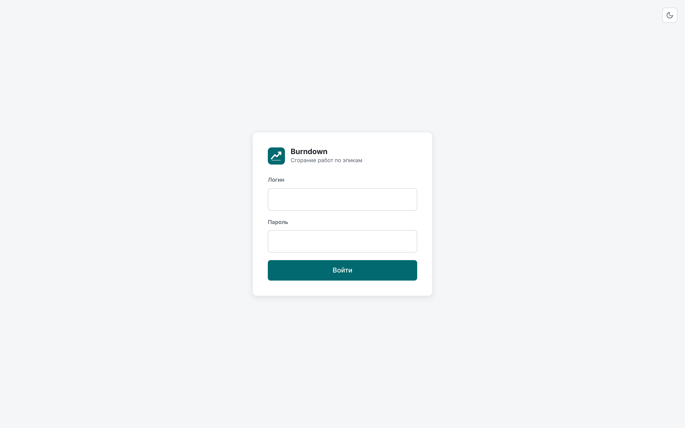
При неверных данных под полями появится сообщение «Неверный логин или пароль». Чтобы завершить работу, нажмите Выйти внизу бокового меню.
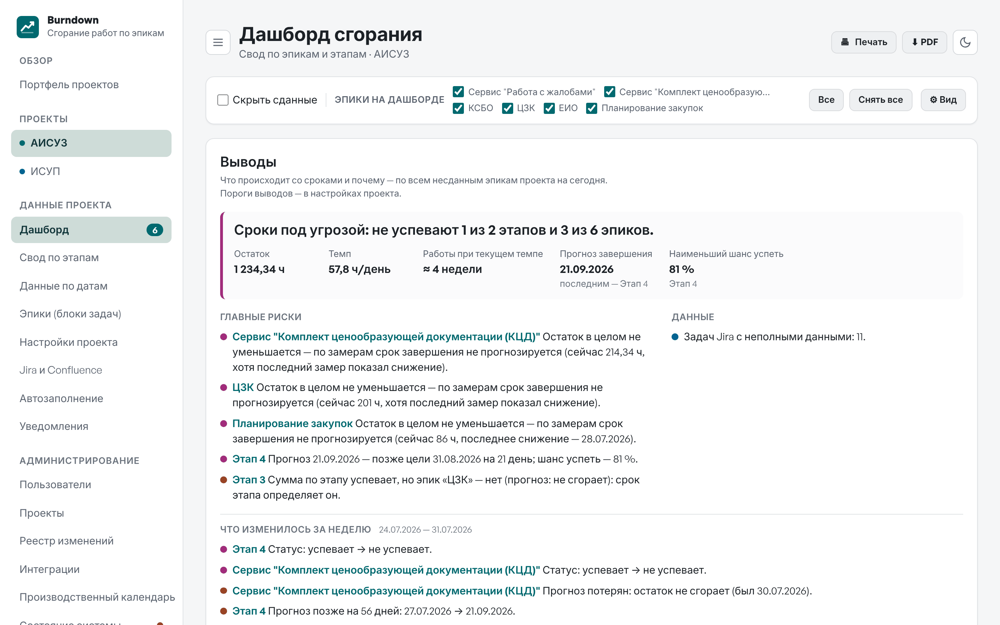
Боковое меню (слева):
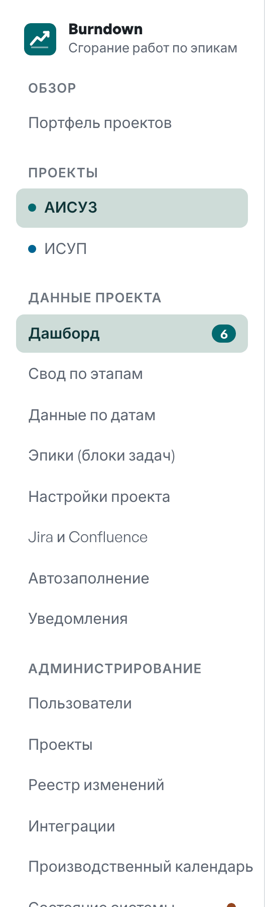
Адрес страницы. Раздел, проект и выбранный эпик записываются в адрес страницы, например …/#/data?project=3&epic=12. Поэтому обновление страницы (F5) открывает тот же раздел того же проекта с тем же эпиком и прокруткой, кнопки Назад и Вперёд браузера переключают разделы, а адрес можно отправить коллеге — у него откроется та же страница (если у него есть доступ к проекту).
Поиск и фильтр в таблицах. Над таблицами дашборда, свода по этапам, списка эпиков, замеров и в списке задач эпика — строка Найти в таблице (ищет по всем колонкам) и кнопка Фильтр по полям. Она добавляет под заголовками условие для каждой колонки:
>0, >=10, <5, =0, 5–20 (диапазон) или пусто; неразобранное условие подсвечивается красным и не применяется;Условия складываются (И), рядом показано «Показано N из M». Фильтр сохраняется при сортировке и обновлении данных; строка «Итого» не скрывается и считается по всем строкам. Сбросить фильтр очищает все условия.
Сортировка. Щелчок по заголовку столбца (со значком ↕) сортирует таблицу по возрастанию, повторный — по убыванию; стрелка ↑ или ↓ показывает текущий порядок. Числа сортируются как числа, даты — по времени, пустые значения всегда в конце, строка «Итого» остаётся внизу. Сортировка есть во всех этих таблицах, в том числе в «Задачах Jira по эпикам», burn rate по дням и списке задач эпика, и сохраняется при обновлении данных.
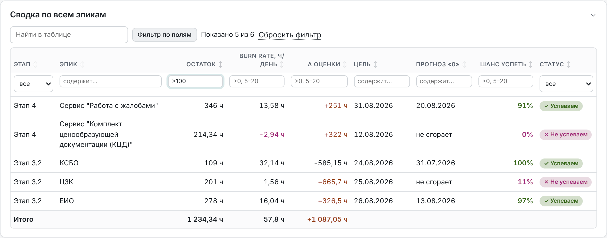
В окнах (новый проект, профиль, замер по всем эпикам и т. п.) Enter в поле ввода сохраняет, Esc закрывает окно без изменений. В подтверждении удаления кнопка по умолчанию — Отмена.
Заголовок раздела показывает название раздела и текущий проект. Справа — Печать, PDF (в разделах с отчётами) и переключатель темы. Кнопка ☰ слева от заголовка сворачивает и разворачивает меню.
Внизу бокового меню под © указана версия, например «Burndown — версия 1.8.0».
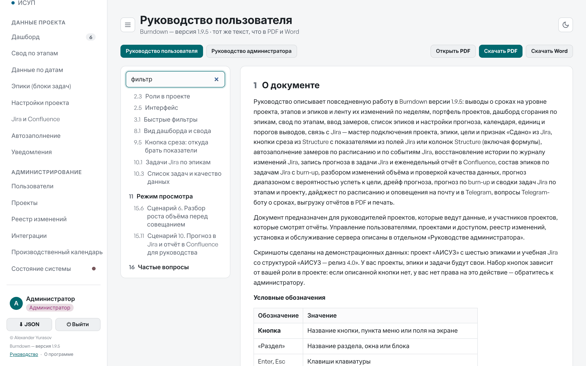
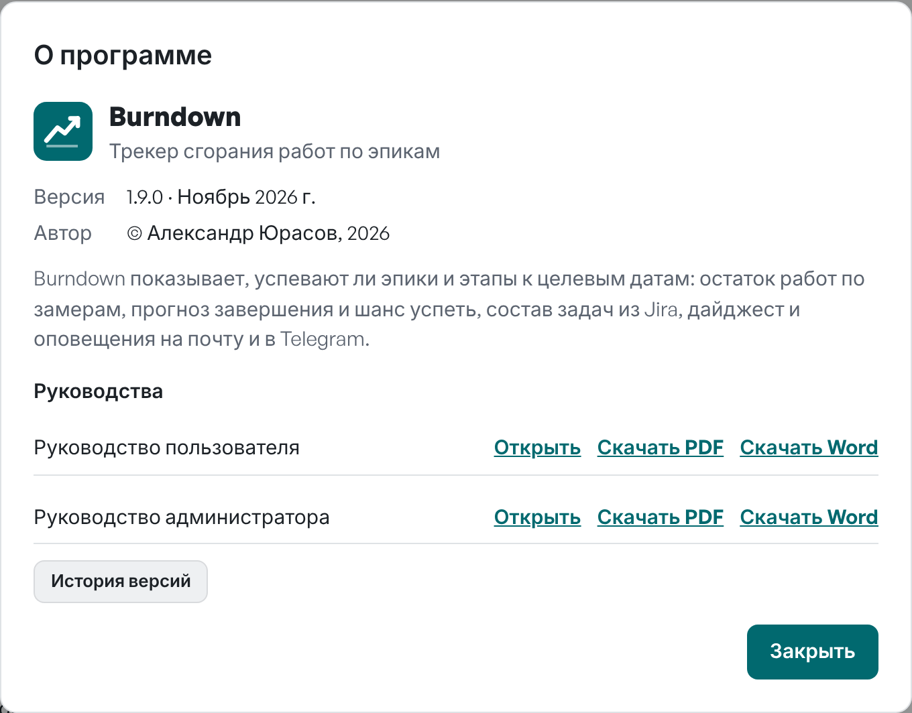
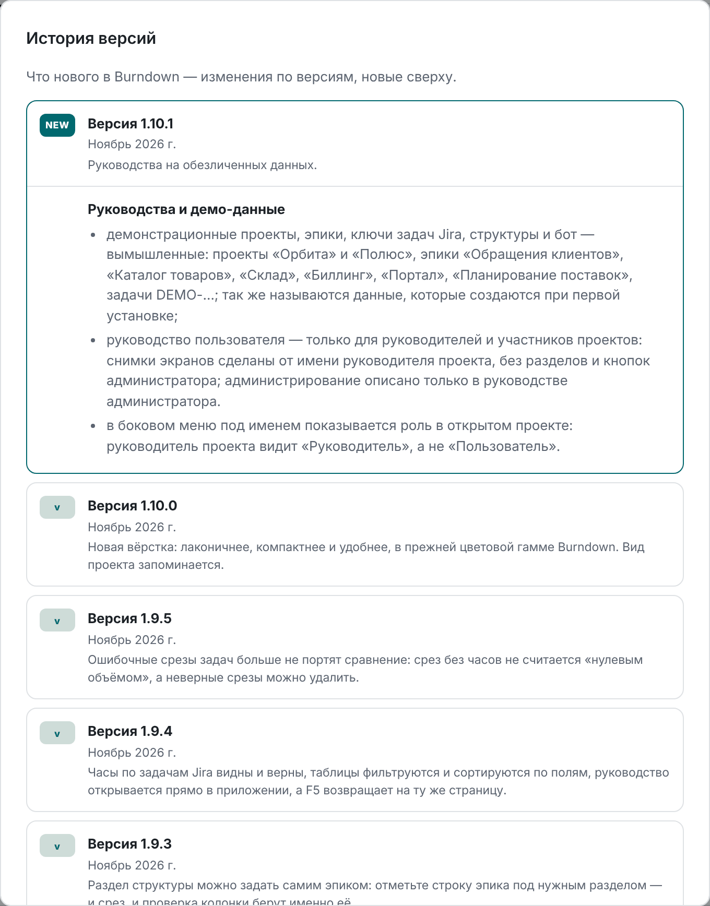
Кнопка с луной или солнцем переключает светлую и тёмную тему. Выбор запоминается в браузере; если тема не выбиралась, используется тема операционной системы.
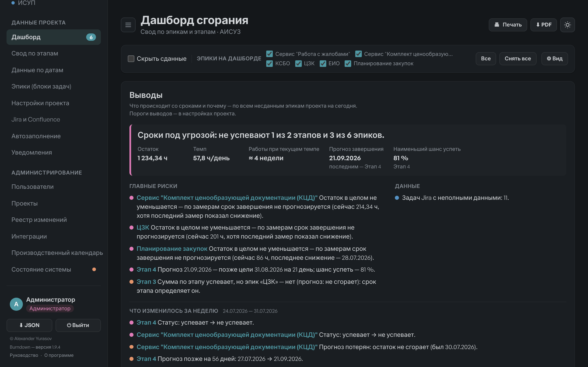
Щелчок по своему имени внизу меню открывает профиль.
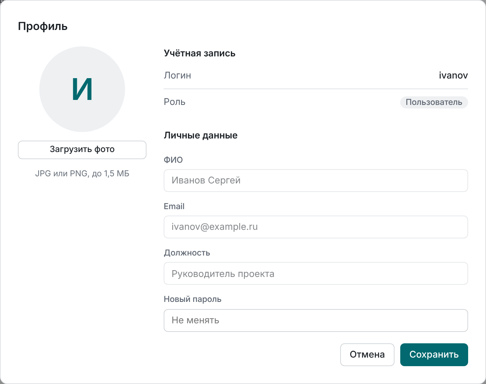
«Дашборд» показывает состояние всех эпиков проекта: выводы о сроках, ключевые показатели, графики, сводную таблицу и burn rate по дням. Если проект связан с Jira, на дашборде появляются ещё два блока — «Задачи Jira по эпикам» и burn-up выбранного эпика (раздел «Задачи Jira на дашборде»).
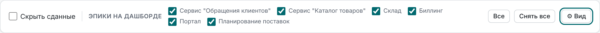
Фильтры не изменяют данные и доступны в режиме просмотра. Выгрузка дашборда в PDF учитывает выбранные эпики.
Кнопка ⚙ Вид справа на панели фильтров выбирает, какие блоки показывать (см. «Вид дашборда и свода»).
Блок «Выводы» вверху дашборда отвечает на вопросы руководителя: успеваем ли, что мешает и куда смотреть в первую очередь. Выводы считаются по всем несданным эпикам проекта на сегодняшний день — независимо от флажков Эпики на дашборде — и пересчитываются после каждого изменения данных.
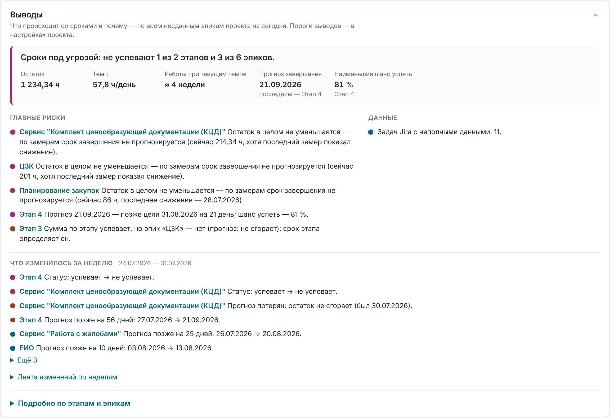
| Часть блока | Что показывает |
|---|---|
| Главное (заголовок с цветной полосой) | Одна фраза о сроках проекта: сколько этапов и эпиков не успевают или под риском. Цвет полосы — статус проекта по самому проблемному этапу или эпику |
| Ключевые цифры | Остаток и текущий темп по проекту, сколько недель работы осталось при этом темпе, прогноз завершения по самому позднему этапу, наименьший шанс успеть среди этапов, изменение темпа за период сравнения |
| Главные риски | До шести самых важных выводов по этапам и эпикам — по одному на каждый, от самых острых. Щелчок по названию эпика открывает его график, по названию этапа — его выводы в своде по этапам |
| Хорошие новости | Эпики, где темп вырос или прогноз заметно улучшился |
| Данные | Что мешает доверять цифрам: устаревшие замеры, эпики без цели или без замеров, задачи Jira с неполными данными, ошибки автозаполнения |
Кнопка Подробно по этапам и эпикам раскрывает выводы в глубину: по каждому этапу — статус, прогноз, цель, шанс и все выводы, под ним — эпики этапа; щелчок по эпику раскрывает его выводы.
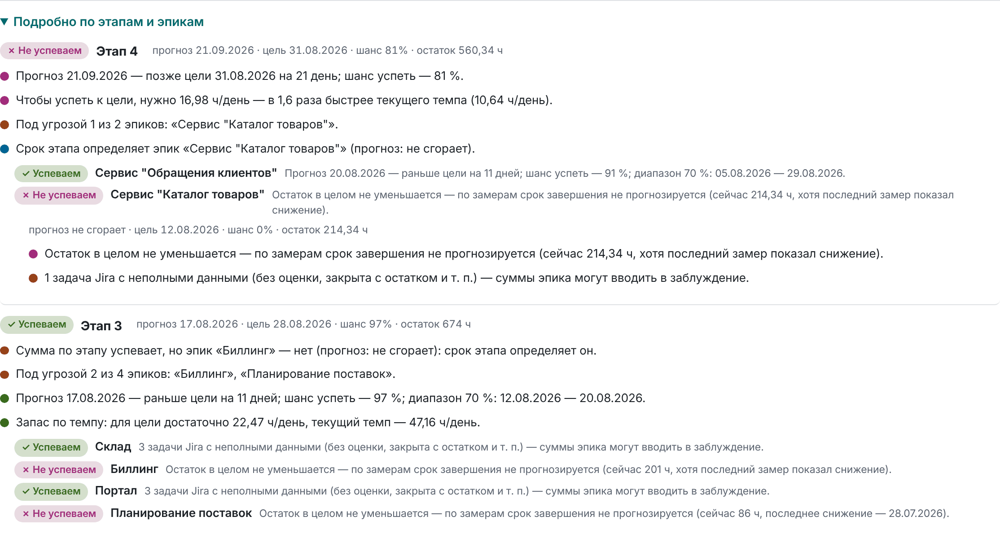
Важность вывода обозначена цветом точки: красный — не успеваем, оранжевый — риск, синий — к сведению, зелёный — хорошо.
| Вывод | Когда появляется |
|---|---|
| Прогноз позже цели | Прогноз обнуления остатка позже целевой даты; указано, на сколько дней, и шанс успеть |
| Нужный темп | Сколько часов в день нужно сгорать до цели и во сколько раз это больше текущего темпа; при запасе — «Запас по темпу» |
| Остаток не уменьшается | По замерам остаток в целом растёт или стоит — срок завершения не прогнозируется |
| Цель прошла | Целевая дата уже наступила, а остаток не нулевой |
| Темп снизился / вырос | Темп за период сравнения (по умолчанию 28 дней) отличается от темпа до него больше чем на 30% |
| Объём вырос | Оценка (или объём задач Jira, если проект связан с Jira) выросла за период сравнения больше порога — срок сдвигает рост объёма, а не только темп |
| Прогноз сдвинулся | Прогноз на последний замер позже прогноза на замер, сделанный период сравнения назад, больше чем на порог |
| Шанс успеть низкий | Прогноз в срок, но шанс успеть ниже порога: темп между замерами неровный |
| Замер устарел | Последний замер старше порога — прогноз мог устареть |
| Срок этапа определяет эпик | Сумма по этапу успевает, но один из эпиков — нет: этап завершится, когда завершится он |
| Задачи с неполными данными | В последнем срезе Jira есть задачи без оценки, закрытые с остатком и т. п. |
Пороги выводов (через сколько дней замер устарел, какой рост объёма и сдвиг прогноза считать значимым, порог шанса и период сравнения) задаются в «Настройках проекта».
Совет. Начинайте обзор проекта с блока «Выводы»: «Главные риски» — повестка совещания, а «Данные» — список того, что нужно поправить до него.
Под главными рисками блок «Выводы» показывает, что поменялось за последние семь дней (период указан рядом с заголовком). Burndown каждый день сохраняет снимок выводов проекта и сравнивает сегодняшний со снимком недельной давности. Первыми идут ухудшения, затем то, что стоит знать, затем хорошие новости; щелчок по названию эпика открывает его график, по названию этапа — его выводы в своде.
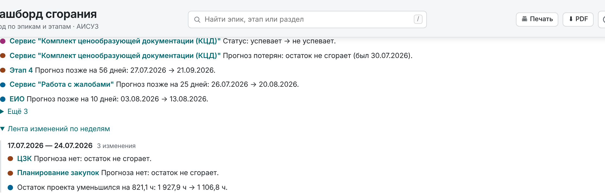
| Изменение | Что означает |
|---|---|
| Статус: успевает → в зоне риска | Статус эпика, этапа или всего проекта стал хуже или лучше |
| Прогноз позже / раньше на N дней | Прогноз завершения сдвинулся на 3 дня и больше; красным — если он теперь позже цели |
| Шанс успеть к цели: 80 % → 45 % | Шанс успеть изменился на 15 процентных пунктов и больше |
| Прогноз потерян | Остаток перестал сгорать или срок ушёл дальше 3 лет |
| Работа возобновилась | Остаток снова сгорает — прогноз появился |
| Цель изменена | Целевая дата эпика или этапа стала другой |
| Эпик завершён | Остаток эпика обнулился |
| Новый эпик в работе / Больше не в работе | Эпик добавлен или отмечен сданным (удалён) |
| Остаток проекта уменьшился / вырос | Как изменился суммарный остаток несданных эпиков |
Первые шесть изменений видны сразу, остальные — под Ещё N. Лента изменений по неделям раскрывает такие же списки за прошлые недели — до двух месяцев назад, но не раньше первых замеров проекта.
Для недель до обновления Burndown до версии 1.9.0 снимков ещё нет — выводы на те даты восстанавливаются по замерам, сделанным к той дате, с текущими целями и настройками. В таких неделях нет изменений шанса успеть: его даёт только настоящий снимок.
Тот же список «За неделю» приходит в дайджесте — сразу после главных рисков.
Карточки показывают, сколько эпиков выбрано, сколько из них успевают, в зоне риска и не успевают, а также суммарный остаток часов. Остаток берётся по последнему заполненному замеру каждого эпика.
Главный график показывает историю остатка одного эпика и его перспективу. Эпик выбирается в списке Эпик; в поле Цель руководитель проекта может сразу изменить целевую дату.
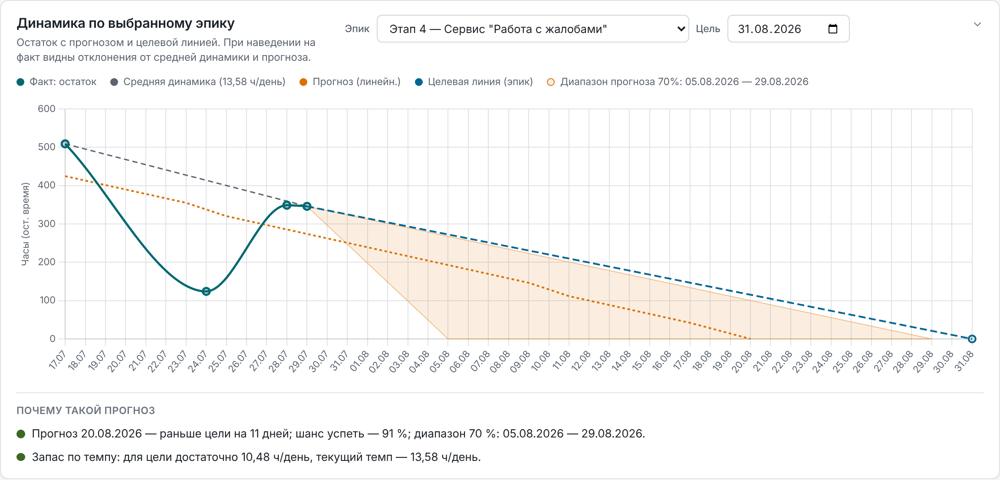
| Линия | Что показывает |
|---|---|
| Факт: остаток (сплошная) | Фактический остаток часов по датам замеров |
| Средняя динамика (серый пунктир) | Остаток при равномерном сгорании со средним burn rate |
| Прогноз (оранжевый пунктир) | Ожидаемое изменение остатка по выбранному методу прогноза |
| Целевая линия (синий пунктир) | Как должен сгорать остаток, чтобы успеть к целевой дате |
| Отметка «Сегодня» | Текущая дата, если она попадает в диапазон графика |
| Диапазон прогноза (оранжевая заливка) | Между какими датами остаток обнулится с выбранной вероятностью (по умолчанию 70%) — см. «Прогноз диапазоном» |
Наведите курсор на точку фактического остатка: подсказка покажет значение и отклонения от средней динамики и от прогноза.
Под графиком — Почему такой прогноз: выводы по выбранному эпику (см. «Выводы»): насколько прогноз расходится с целью, какой темп нужен, меняются ли темп и объём, свежи ли замеры.
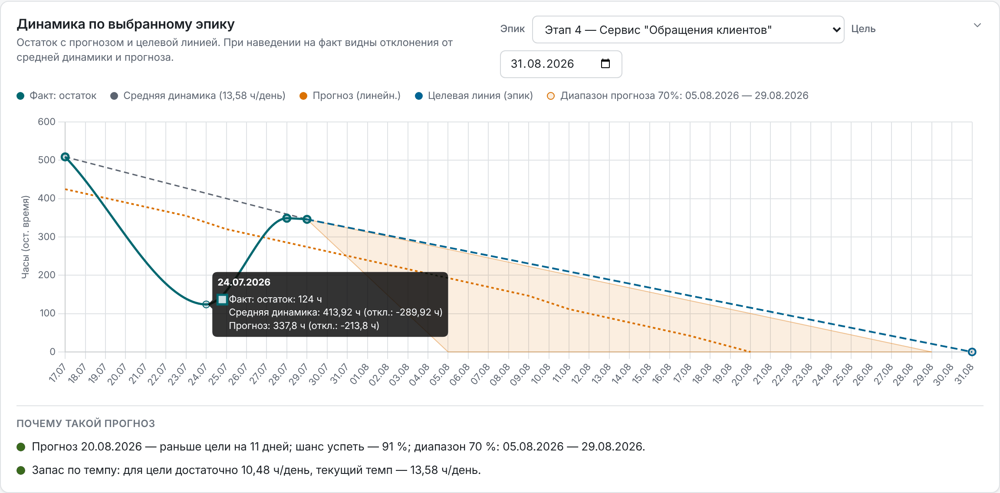
Ниже — два графика того же эпика: затраченное время и оценка.
Блок Графики по всем выбранным эпикам содержит три графика с линией на каждый эпик: остаток, затраченное время и оценка. Блок сворачивается щелчком по заголовку; состояние запоминается в браузере.
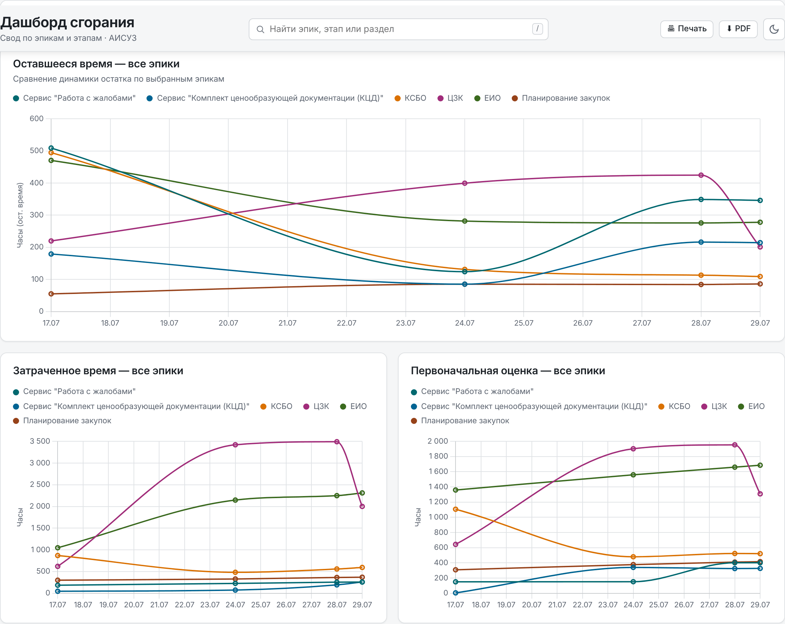
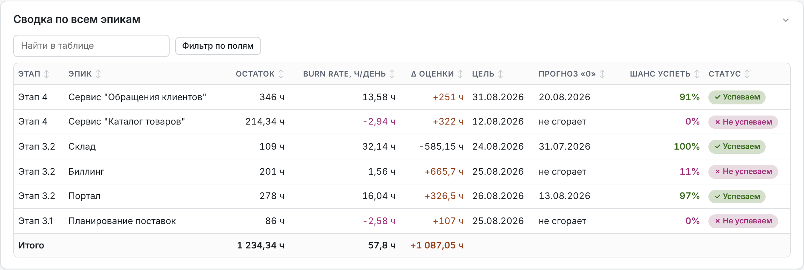
Для каждого эпика выводятся этап, текущий остаток, средний burn rate, Δ оценки, целевая дата, прогноз обнуления остатка, шанс успеть к цели и статус; в последней строке — итог по проекту.
Прогноз «0» — одна дата, а реальная скорость команды меняется от недели к неделе. Поэтому Burndown дополнительно моделирует будущее методом Монте-Карло:
| Показатель | Где виден | Что означает |
|---|---|---|
| Шанс успеть | Сводка по эпикам и свод по этапам | Доля сценариев, в которых остаток обнулился к целевой дате. Зелёный — 80% и выше, оранжевый — 50–79%, красный — меньше 50% |
| Диапазон (по умолчанию 70%) | Заливка на графике эпика, легенда и подсказка в столбце «Шанс успеть» | От оптимистичной до пессимистичной даты: между ними завершается указанная доля сценариев. Для 70% — от P15 (раньше завершается лишь 15% сценариев) до P85 (к ней завершаются 85%). Уровень 50, 70, 80 или 90% выбирается в «Настройках проекта» |
| Медиана (P50) | Подсказка в столбце «Шанс успеть» | Дата, к которой завершается половина сценариев |
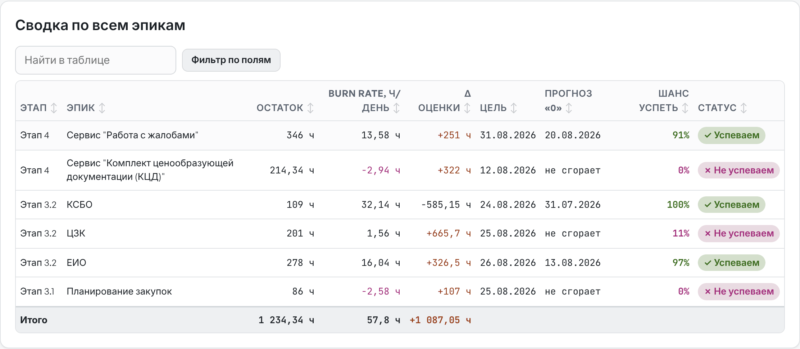
Для расчёта нужно не меньше трёх замеров остатка (двух интервалов); без цели шанс не считается, но диапазон в подсказке виден. Если остаток в истории чаще рос, чем сгорал, шанс будет низким, а в подсказке появится «не сгорает». Результат детерминирован: при тех же данных цифры не меняются от перерисовки к перерисовке.
Совет. Статус и шанс успеть дополняют друг друга. «✓ Успеваем» при шансе 55% означает, что средний темп достаточен, но неровная работа команды делает срок рискованным.
Панель «Дрейф прогноза» под графиками выбранного эпика показывает, какой была прогнозная дата завершения на каждую дату замера: Burndown пересчитывает прогноз так, как будто остальных замеров ещё не было.
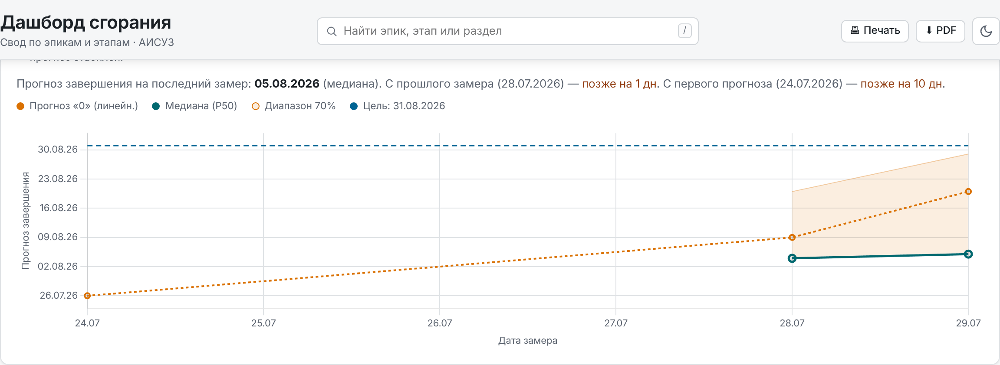
| Линия | Что показывает |
|---|---|
| Прогноз «0» (пунктир) | Прогноз выбранным в настройках методом — линейная регрессия или средняя скорость |
| Медиана (P50) | Медиана Монте-Карло — с третьего замера |
| Диапазон (заливка) | Диапазон прогноза с уровнем доверия из настроек на каждую дату замера |
| Цель | Текущая целевая дата эпика |
Над графиком — итог: прогноз на последний замер и насколько он сдвинулся с прошлого замера и с первого прогноза. Линия, уходящая вверх, — тревожный сигнал: срок каждый раз сдвигается, даже если статус пока «Успеваем». Горизонтальная линия — прогноз стабилен; линия вниз — команда опережает ожидания. Очень далёкие прогнозы (более года после цели) на графике не показываются.
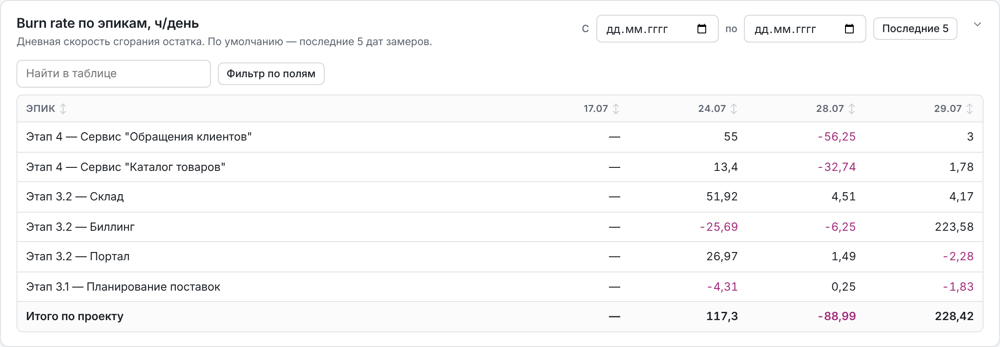
Таблица показывает скорость сгорания на каждую дату замера: разницу между предыдущим и текущим остатком, делённую на число дней между замерами (при расчёте в рабочих днях — на число рабочих дней). По умолчанию — последние 5 дат; другой период задаётся полями С и по, кнопка Последние 5 возвращает период по умолчанию.
Раздел показывает сгорание, суммированное по этапам. Вверху — выводы по этапам, ниже — карточки этапов с суммарным остатком, целевой датой и статусом.
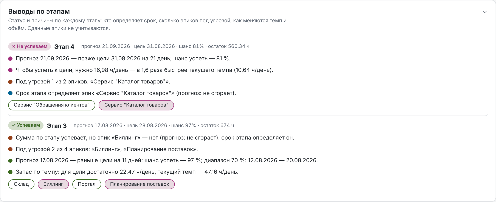
Для каждого этапа — статус, прогноз, цель, шанс успеть и остаток, а под ними выводы: насколько прогноз этапа расходится с целью и какой темп нужен, вырос ли объём, сколько эпиков под угрозой, у каких эпиков устарели замеры и какой эпик определяет срок этапа. Последнее особенно важно: сумма по этапу может успевать, а один эпик — нет, и тогда этап завершится вместе с ним.
Ниже — эпики этапа, рамка окрашена по их статусу. Щелчок по эпику открывает его график на дашборде.
Эпики этапа часто замеряют в разные дни. Чтобы сумма не «прыгала», на дату, когда у эпика замера не было, берётся его последний замер, а до первого замера — первый (появление эпика в сводке не выглядит как рост объёма). Даты, на которые нет ни одного значения, — например, пустая строка «+ Новая дата», — в график этапа не попадают.
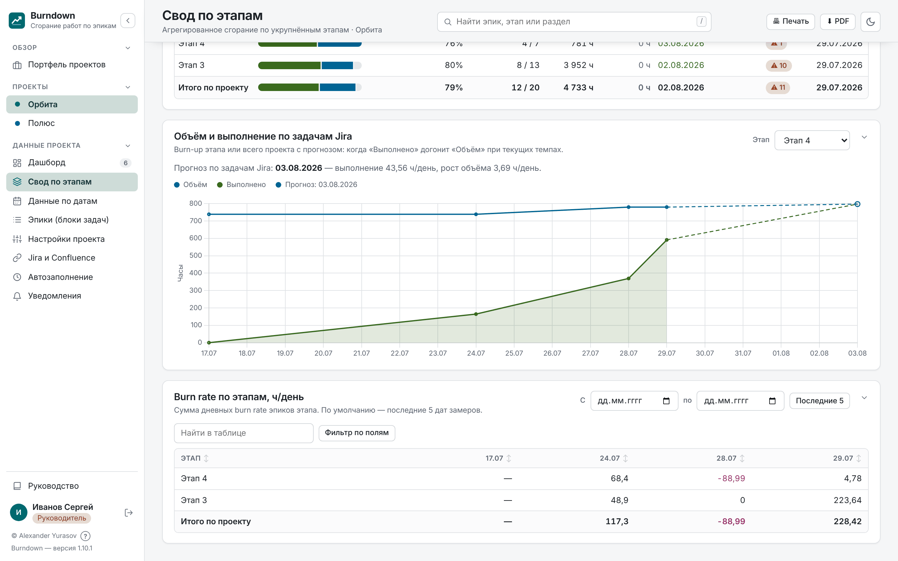
Флажок Учитывать сданные эпики включает сданные эпики в расчёты этапа; по умолчанию они не учитываются.
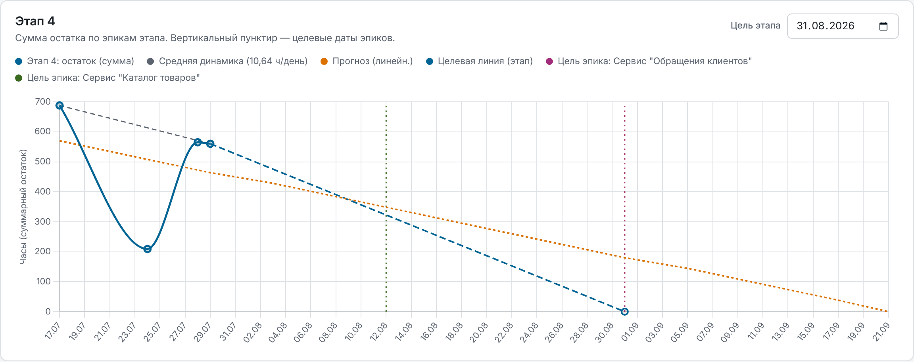
Для каждого этапа строится график суммарного остатка с теми же линиями, что и у эпика. Вертикальные пунктиры — целевые даты эпиков этапа. Целевая дата этапа задаётся в поле Цель этапа над графиком.
Совет. Если в какую-то дату замер есть не по всем эпикам этапа, для остальных берётся их последний известный остаток — замеры в разные дни не дают ложных провалов на графике.
Если проект связан с Jira, в своде по этапам есть таблица «Задачи Jira по этапам»: те же показатели, что и у эпиков (состав задач, выполнено объёма, Δ объёма, прогноз по задачам, проблемы данных), суммированные по эпикам каждого этапа, и строка Итого по проекту. Такая же итоговая строка есть в «Задачах Jira по эпикам» на дашборде.
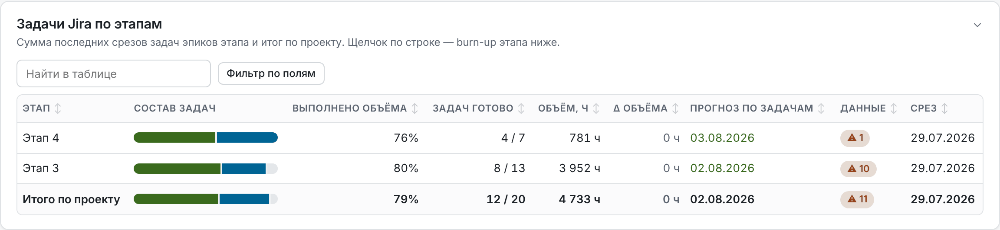
Ниже — burn-up этапа с прогнозом. Этап выбирается щелчком по строке таблицы или в списке Этап; вариант Весь проект показывает burn-up по всем эпикам со срезами.
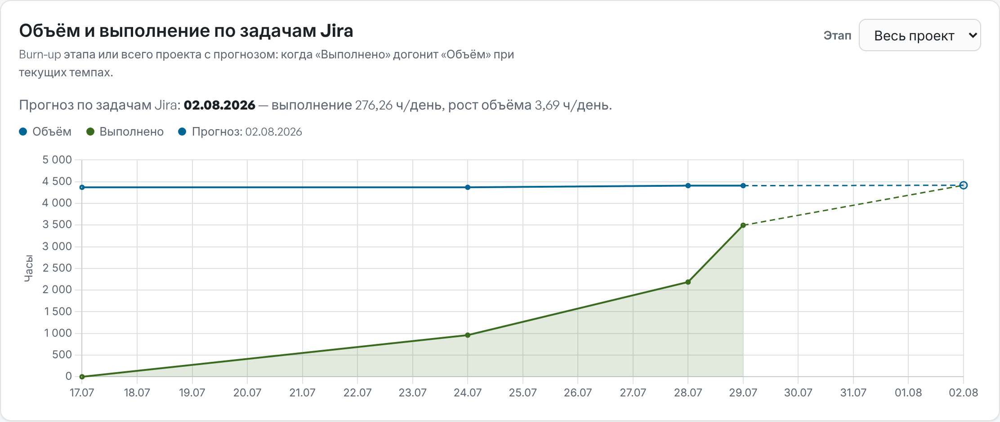
Если срезы эпиков сделаны в разные дни, для каждой даты берётся последний известный срез каждого эпика — так же, как в графиках этапов по замерам. В PDF-отчёт свода по этапам попадает таблица задач Jira по этапам с итогом по проекту.
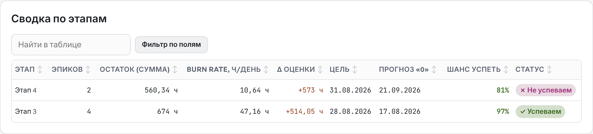
Сводка по этапам устроена как сводка по эпикам и дополнительно показывает число эпиков в этапе. Таблица burn rate по этапам складывает дневной burn rate эпиков, поэтому её итог совпадает с итогом таблицы на дашборде.
В разделе вносятся и правятся замеры. Изменения сохраняются автоматически при выходе из поля — внизу экрана на пару секунд появляется «Сохранено».
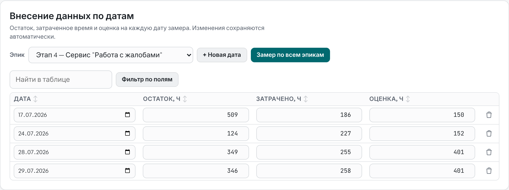
Обычно замер делают в один день по всем эпикам. Нажмите Замер по всем эпикам — откроется таблица всех несданных эпиков.
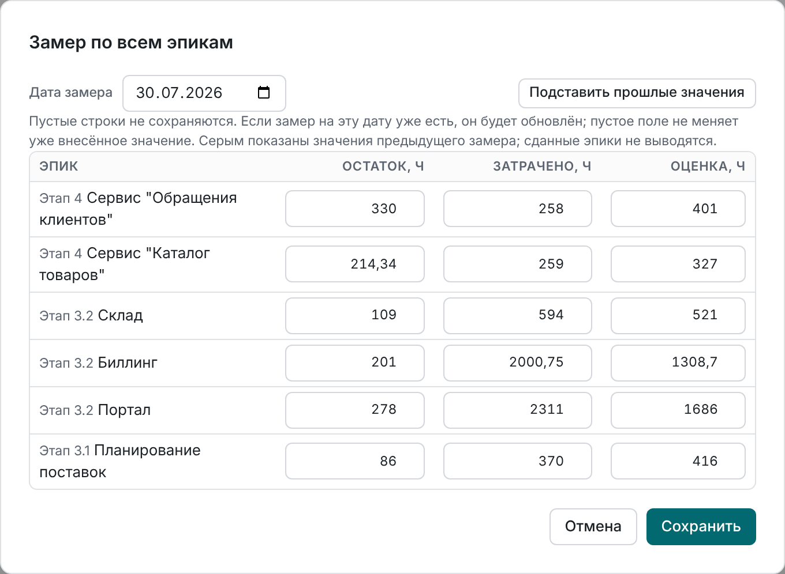
Нажмите значок корзины в конце строки и подтвердите действие. Удаление необратимо.
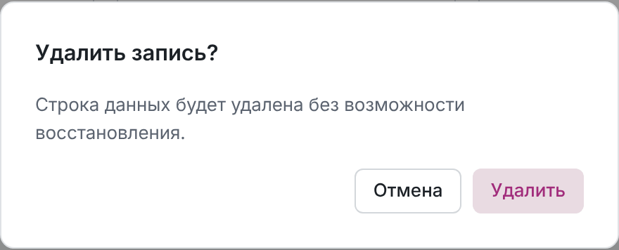
Раздел содержит список эпиков проекта; поля редактируются прямо в таблице и сохраняются при выходе из поля.
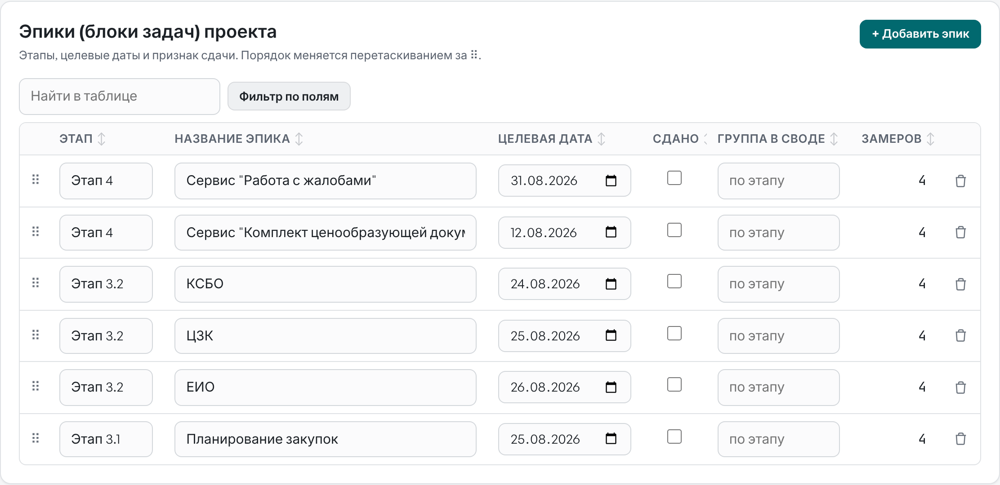
| Столбец | Назначение |
|---|---|
| ⠿ | Ручка перетаскивания: порядок эпиков используется во всех списках и на графиках |
| Этап | Этап эпика, например «Этап 3.2» — определяет группировку в своде |
| Название эпика | Наименование блока работ |
| Целевая дата | Срок завершения: по нему рассчитываются статус и целевая линия |
| Сдано | Отметка о сдаче. Сданные эпики можно скрыть на дашборде; в своде они по умолчанию не учитываются |
| Группа в своде | Необязательное имя группы для свода по этапам |
| Замеров | Сколько замеров внесено по эпику |
+ Добавить эпик создаёт эпик с этапом последнего эпика и сегодняшней целевой датой; корзина удаляет эпик вместе со всеми замерами.
Важно. Удаление эпика удаляет его замеры без возможности восстановления. Если работа завершена, лучше поставить отметку «Сдано» — история сохранится.
Пункт Обзор → Портфель проектов в боковом меню виден, если у вас несколько проектов. Он собирает выводы по всем доступным вам проектам на одной странице — для еженедельного обзора руководителя портфеля.
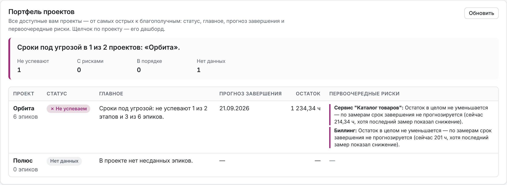
Вверху — главное по портфелю: в скольких проектах сроки под угрозой или есть риски, и какие это проекты; ниже — счётчики по статусам. В таблице проекты идут от самых острых к благополучным:
| Столбец | Что показывает |
|---|---|
| Проект | Название и число несданных эпиков |
| Статус | Статус проекта по самому проблемному этапу или эпику |
| Главное | Та же фраза, что в блоке «Выводы» проекта |
| Прогноз завершения | Прогноз самого позднего этапа |
| Остаток | Суммарный остаток по несданным эпикам |
| Первоочередные риски | Два самых важных вывода проекта |
Щелчок по строке открывает дашборд проекта. Кнопка Обновить пересчитывает портфель.
Раздел доступен руководителю проекта и администратору. Настройки действуют на все расчёты проекта — дашборд, свод, выводы, PDF, дайджест и оповещения — и сохраняются сразу.
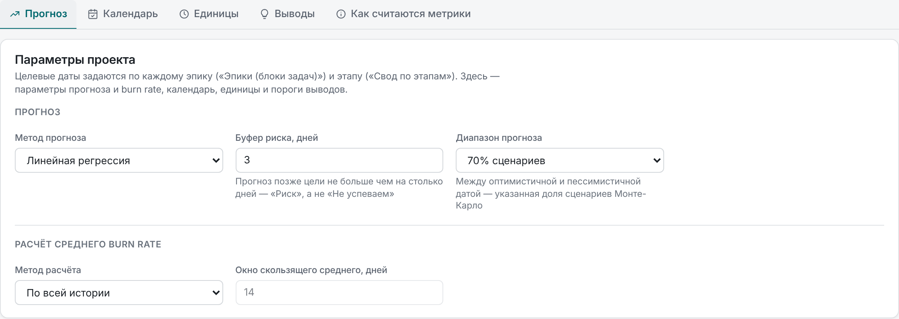
| Параметр | Описание |
|---|---|
| Метод прогноза | Линейная регрессия — прямая, наилучшим образом проходящая через все замеры. Средняя скорость сгорания — продолжение текущего burn rate от последнего остатка |
| Буфер риска, дней | На сколько дней прогноз может опоздать относительно цели, чтобы статус был «Риск», а не «Не успеваем» |
| Диапазон прогноза | Уровень доверия диапазона Монте-Карло: 50, 70 (по умолчанию), 80 или 90% сценариев. Чем выше уровень, тем шире диапазон и тем осторожнее пессимистичная дата |
| Метод расчёта burn rate | По всей истории — от первого до последнего замера. Скользящее среднее — только за последние N дней |
| Окно скользящего среднего, дней | Ширина окна N для скользящего среднего |
Календарь. Флажок Считать сроки в рабочих днях переводит прогноз, burn rate, шанс успеть и нужный темп на рабочие дни: работа идёт с понедельника по пятницу, кроме праздников, а в объявленные рабочими субботы и воскресенья — идёт. Это делает прогноз точнее на длинных праздниках: десять новогодних выходных не «съедают» десять дней работы. Праздники РФ и переносы выходных уже есть в общем производственном календаре, который ведёт администратор, — вводить их не нужно. В полях Дополнительные праздники проекта и Дополнительные рабочие выходные проекта указываются только даты, особые для этого проекта (например, корпоративный выходной), — по одной дате или диапазону в строке, например 01.01.2027 – 08.01.2027. Burn rate тогда показывается за рабочий день.
Единицы. Показывать объём работ — в часах или в человеко-днях; для человеко-дней задайте Часов в человеко-дне (по умолчанию 8). Меняется только отображение на дашборде, в своде, выводах, PDF и дайджесте: замеры по-прежнему вводятся и хранятся в часах, а «Данные по датам» показываются в часах.
Выводы. Пороги, с которых появляются выводы (см. «Выводы»):
| Параметр | По умолчанию | Вывод |
|---|---|---|
| Замер устарел через, дней | 10 | «Последний замер … назад: прогноз мог устареть» |
| Рост объёма, % | 10 | «Оценка (объём задач Jira) выросла на …» |
| Сдвиг прогноза, дней | 7 | «Прогноз сдвинулся на … позже» или «улучшился» |
| Порог шанса успеть, % | 50 | «Прогноз в срок, но шанс успеть — только …» |
| Период сравнения, дней | 28 | За какой срок сравниваются темп, объём и прогноз |
Кнопка ⚙ Вид на панели фильтров дашборда и свода по этапам открывает список блоков. Снимите флажки с блоков, которые вам не нужны, — например, оставьте только «Выводы» и «Сводку по всем эпикам» для быстрого обзора. Настройка личная: она сохраняется в вашей учётной записи, действует на всех устройствах и не меняет вид у других пользователей.
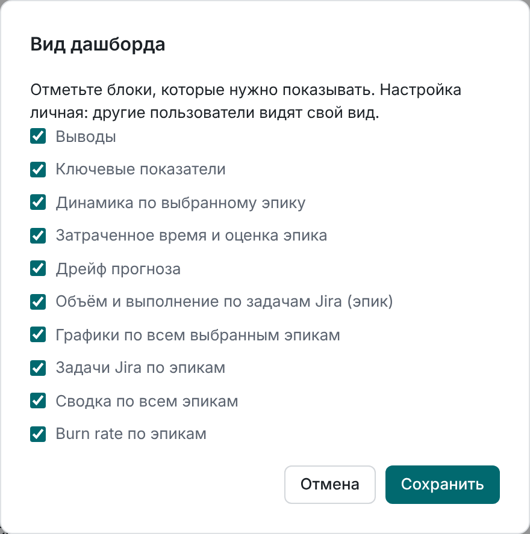
Раздел Jira и Confluence связывает проект с Jira — кнопки среза, мастер подключения, запись прогноза в задачи Jira — и публикует отчёт проекта в Confluence (см. «Прогноз в Jira» и «Отчёт в Confluence»).
Связь с Jira избавляет от ручного переноса цифр: Burndown сам суммирует оставшееся время, затраченное время и оценку по задачам Jira, которые вы сопоставили с эпиками проекта, а список эпиков, их целевые даты и признак «Сдано» может брать из Jira. Быстрее всего подключить проект мастером подключения (см. «Мастер подключения проекта»): он сделает всё за один проход. Вручную работа состоит из трёх шагов:
Разделы Jira и Confluence и Автозаполнение видят руководитель проекта и администратор.
Вверху раздела «Jira и Confluence» показано только, настроено ли подключение: «✓ Подключение к Jira настроено» или «Подключение к Jira не настроено». Адрес Jira, учётная запись и способ входа видны только администратору.
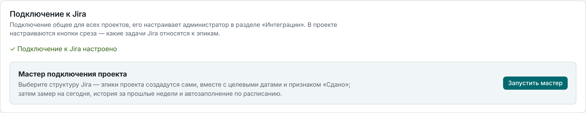
Если подключение не настроено, кнопки среза можно создать заранее, но срезы и автозаполнение заработают только после того, как администратор настроит подключение. Сменить его может только администратор. Если срез сообщает об ошибке подключения («Не удалось подключиться к Jira», «Jira отклонила логин или пароль подключения» и т. п.), сообщите администратору — подробности ошибки он увидит при проверке подключения в разделе «Интеграции».
Совет. Burndown читает задачи от имени общей учётной записи. Если задача не видна в срезе, хотя вы её видите в Jira, — у этой учётной записи нет прав на проект Jira или структуру: попросите администратора Jira выдать ей право просмотра.
Когда подключение к Jira настроено, в разделе «Jira и Confluence» есть блок Мастер подключения проекта с кнопкой Запустить мастер. Мастер подключает проект к Jira за четыре шага — даже пустой проект, где ещё нет ни одного эпика.
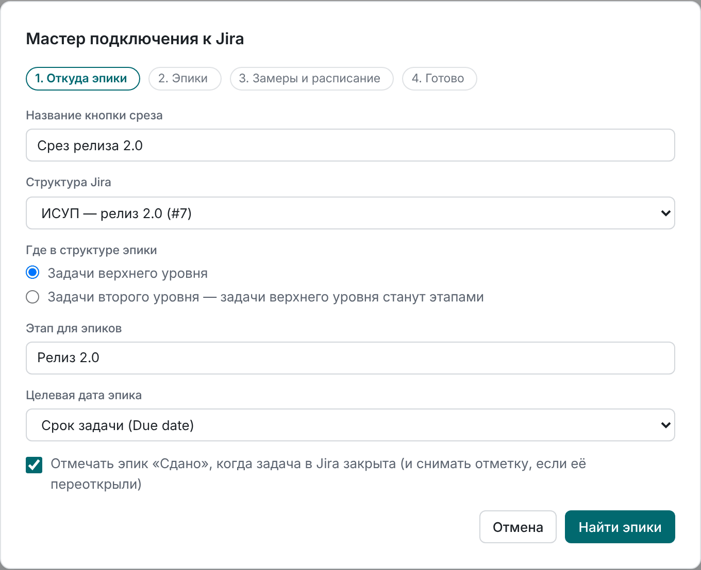
project = ABC AND issuetype = Epic AND resolution = Unresolved. Укажите этап для новых эпиков (если этапы не берутся из структуры), откуда брать целевую дату — из срока задачи (Due date) или из даты выпуска её версии (Fix version) — и отметьте, нужно ли ставить «Сдано», когда задача в Jira закрыта.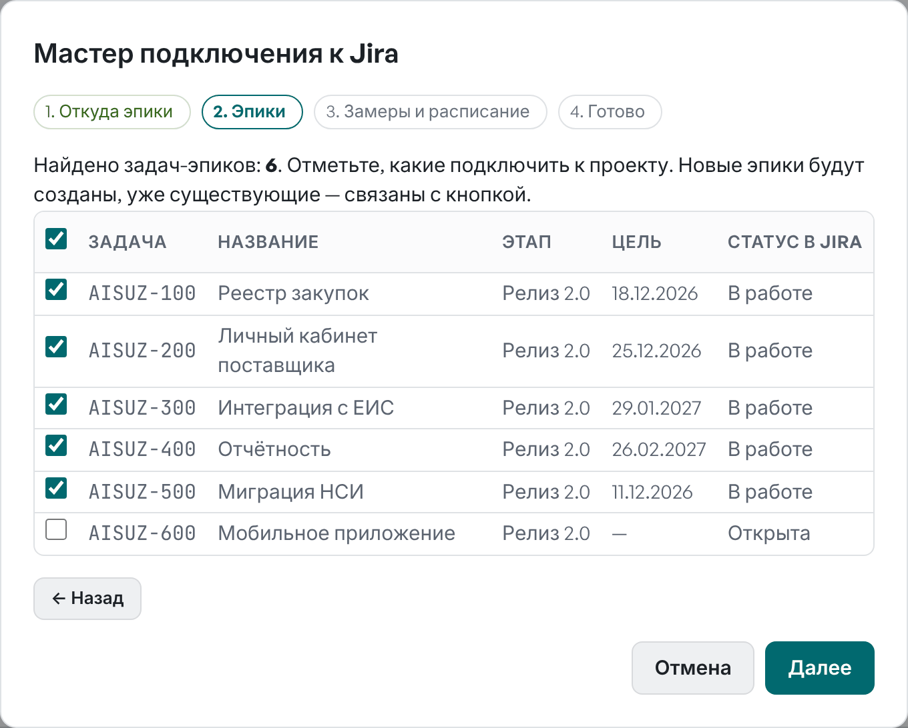
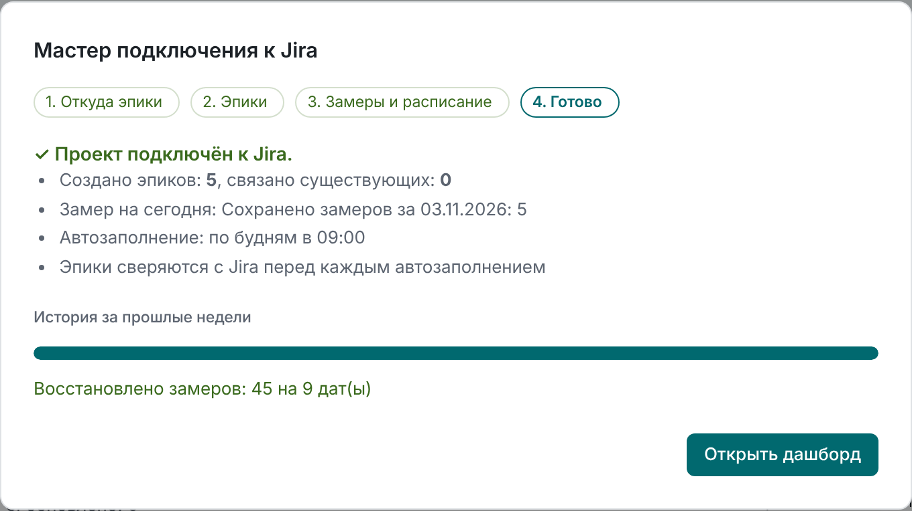
Остаток, затраченное время и оценка берутся из стандартного учёта времени Jira; другие поля можно выбрать потом в редакторе кнопки. Если срез на сегодня не удался (например, в задачах не заполнено время), кнопка и эпики всё равно созданы — мастер покажет причину, а историю и расписание можно включить после первого успешного среза.
Кнопка ⇄ Эпики в таблице кнопок среза открывает настройки синхронизации эпиков этой кнопки с Jira: где в структуре эпики (или запрос JQL для кнопки без структуры), этап для новых эпиков, откуда брать целевую дату, отмечать ли «Сдано» по статусу задачи, обновлять ли названия эпиков по темам задач.
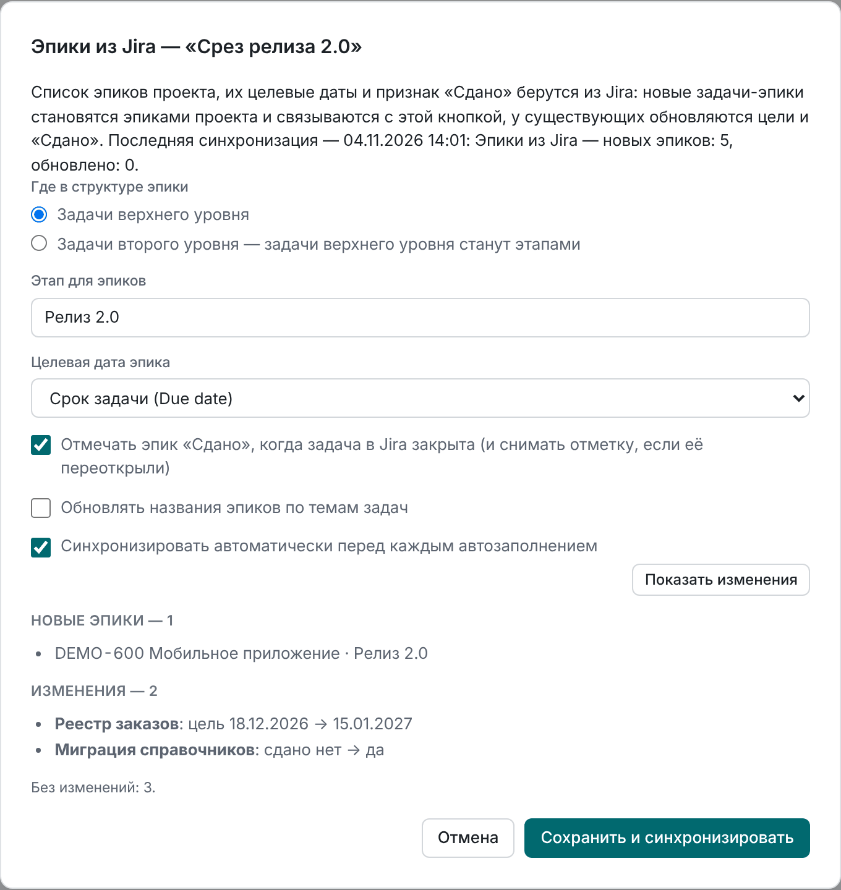
Показать изменения сверяет проект с Jira и показывает, что изменится, ничего не сохраняя:
Сохранить и синхронизировать применяет изменения; каждое попадает в реестр изменений с действием «Синхронизация с Jira». Флажок Синхронизировать автоматически перед каждым автозаполнением делает это без вашего участия: итог («Эпики из Jira — новых эпиков: 1, обновлено: 2») виден в карточке автозапуска. Если синхронизация не удалась, автозаполнение всё равно выполняется.
Важно. Пустой срок в Jira не стирает целевую дату эпика, заданную в Burndown, — синхронизация меняет цель, только когда в Jira она указана.
Кнопка связывает эпики проекта с задачами Jira. Кнопок может быть несколько — например, по разным структурам или для разных групп эпиков. Нажмите + Новая кнопка в блоке «Кнопки среза из Structure».
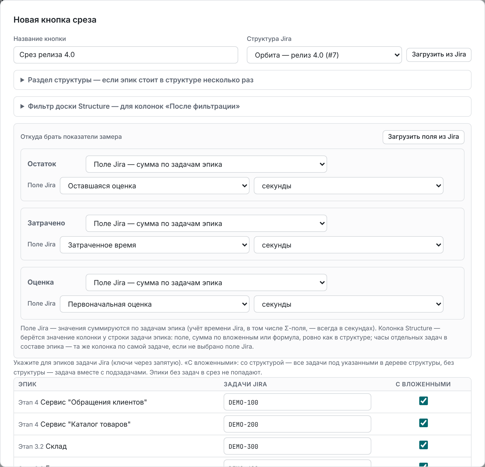
AISUZ-100 или AISUZ-301, AISUZ-302). Регистр не важен.| Структура | «С вложенными» | Что суммируется |
|---|---|---|
| выбрана | ✓ | Указанные задачи и всё их поддерево в структуре (каждая задача — один раз) |
| не выбрана | ✓ | Указанные задачи и их подзадачи в Jira |
| любая | — | Только указанные задачи |
Эпики, у которых задачи не указаны, в срез не попадают. Чтобы забирать данные по всем эпикам проекта, заполните задачи у каждого эпика.
В блоке «Откуда брать показатели замера» для каждого из трёх показателей — Остаток, Затрачено, Оценка — выбирается источник: Поле Jira или Колонка Structure.
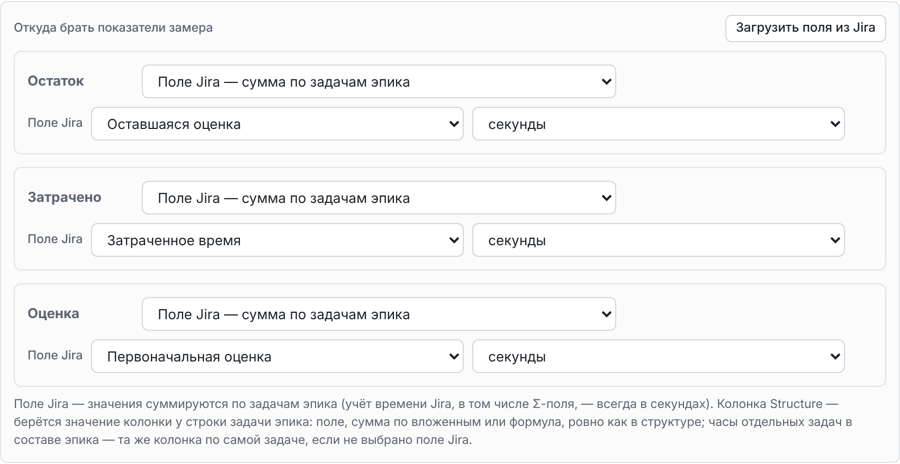
Поле Jira — сумма по задачам эпика. Burndown сам складывает значения поля по задачам эпика (с вложенными — по всему поддереву).
Колонка Structure — значение как в структуре. Если в структуре настроены свои колонки — суммы по вложенным (Σ), формулы, — показатель берётся прямо из колонки: Burndown запрашивает у Structure значение колонки у строки задачи эпика с теми же настройками, поэтому цифры совпадают, включая формульные колонки. Если эпик связан с несколькими задачами, значения их строк складываются; флажок «С вложенными» на колонку не влияет — сумму по вложенным задаёт сама колонка.
Часы задач в составе эпика. У показателя из колонки Structure есть ещё Поле Jira для состава задач и истории. Если оставить — как колонка Structure, по самой задаче —, у каждой задачи в составе эпика берётся та же колонка без суммы по вложенным (для формулы — формула по самой задаче). Сумма по задачам тогда совпадает с колонкой «Σ без дубликатов». Если выбрать поле Jira, значения задач берутся из него; для восстановления истории по журналу Jira нужно именно поле.
Выберите Колонка Structure — откроется окно колонки. Задайте её так же, как она настроена в Structure (в Structure — Edit column у заголовка колонки):
| В Structure | В Burndown |
|---|---|
| Type: Field, поле, например Time Spent | Поле — то же поле Jira и формат (длительность для учёта времени) |
| Type: Formula, текст формулы и переменные | Формула — тот же текст; для каждой переменной — то же поле Jira и формат |
| Sum over sub-items | Суммировать по вложенным |
| Exclude duplicates | Исключать дубликаты |
| Format: Duration, Work time | Единица Значение колонки в: миллисекунды — Structure отдаёт длительность в миллисекундах |
| After filtering | После фильтрации — и у кнопки тот же фильтр, что включён на доске (Фильтр доски Structure, см. ниже) |
Переменные формулы Burndown находит сам и предлагает поле по имени: orig — «Первоначальная оценка», spent — «Затраченное время», remaining — «Оставшаяся оценка», status — «Статус» (формат «текст», сравнивается с названием статуса, например status != "In Progress"). Для любой переменной можно выбрать любое поле Jira — Загрузить поля не нужно, список подгружается сам — и формат: длительность, число, текст или дата. Имена после WITH — локальные, поле для них не нужно.
Пример: колонка «Σ Остаток (с обнулением)» с формулой
WITH rest = orig - spent :
if (rest < 0 OR (status != "Backlog" AND status != "In Progress"), 0, rest)и галочками Sum over sub-items и Exclude duplicates задаётся так: Формула с этим текстом, orig → «Первоначальная оценка» (длительность), spent → «Затраченное время» (длительность), status → «Статус» (текст), отмечены Суммировать по вложенным и Исключать дубликаты, единица — миллисекунды.
Раздел структуры: эпик стоит в нескольких местах. Одна и та же задача может стоять в структуре несколько раз — например, в разделе договора, в группировке по статусам и в разделе «4.1». Под каждой строкой у неё своё поддерево, поэтому и суммы разные. Чтобы Burndown брал ту строку, на которую вы смотрите на доске, раскройте у кнопки Раздел структуры, нажмите Загрузить разделы и отметьте нужные разделы — папки («4.1», «4.2», «4.3») или сами эпики под ними («SRM-4687 …» под «4.1»): отметка запоминает именно эту строку, даже если эпик стоит на верхних уровнях в нескольких разделах. Строка эпика берётся из отмеченных разделов — для колонок Structure, для сумм полей Jira, для состава задач и для восстановления истории. Без отметок берётся первая строка в структуре, а срез предупреждает: «задача стоит в структуре N раз(а) — взята первая строка».
Фильтр доски и «После фильтрации». Колонка с After filtering в Structure суммирует только задачи, видимые с фильтром доски. Чтобы Burndown считал так же:
status not in (Done, Closed)); если на доске отмечено «Show sub-items», отметьте Показывать вложенные задачи совпавших;Такие колонки Burndown запрашивает у Structure с этим фильтром — задачи, скрытые им, в сумму не входят; колонки без отметки считаются по всей структуре, как в Structure. Если эпик фильтром скрыт целиком, его значение в колонке «После фильтрации» — 0, а срез покажет предупреждение. Фильтр, который не задать одним JQL (S-JQL, текстовый, по атрибуту), можно взять из Structure: выберите Трансформации из Structure (JSON) и вставьте содержимое запроса value или forest с доски (F12 → «Сеть»), где есть forestSpec с transformations.
Третий способ задать колонку — Спецификация из Structure (JSON): откройте структуру, нажмите F12 → «Сеть» (Network), обновите страницу, в фильтре введите structure, найдите запрос value и вставьте его содержимое («Полезные данные», Payload). Если такого запроса в вашей версии Structure нет, задайте колонку как «Поле» или «Формула».
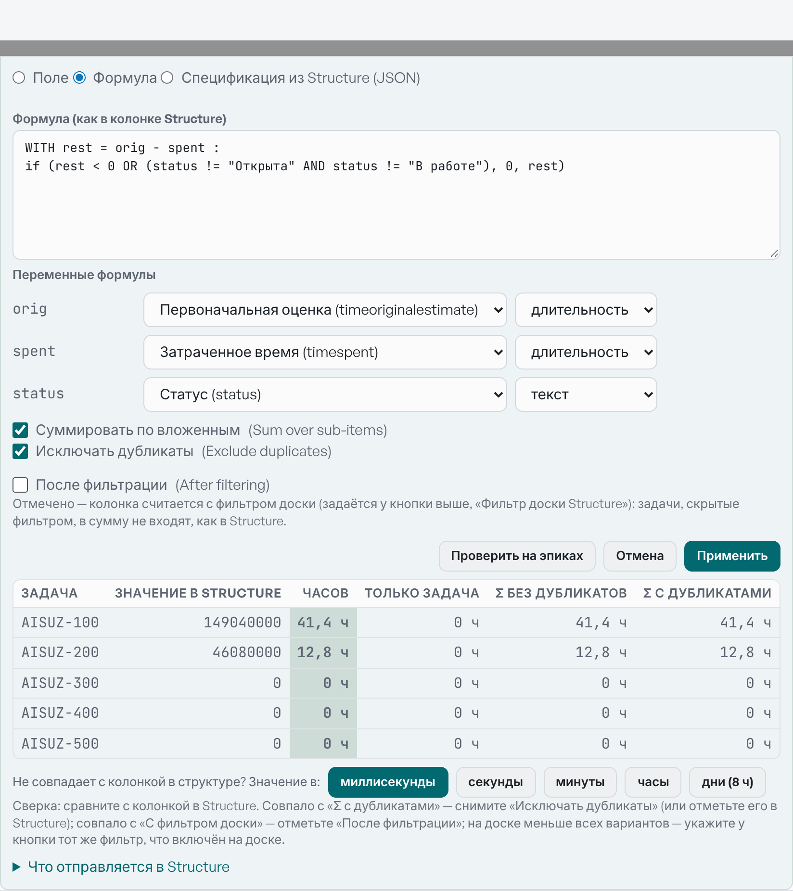
Проверить на эпиках запрашивает значения колонки для задач первых эпиков таблицы и показывает значение, которое отдал Structure, и сколько это часов при выбранной единице. Для «Поля» и «Формулы» рядом — сверка: только сама задача, Σ без дубликатов и Σ с дубликатами. Сравните с колонкой в структуре:
Если эпик стоит в структуре несколько раз, под таблицей перечислены все его места с путём («Договор развития → …», «4.1») и значением колонки у каждой строки; взятая отмечена. Если на доске другое число — отметьте у кнопки нужный Раздел структуры. Для «Поля» и «Формулы» ниже — значения каждой переменной у строки эпика: пусто — Structure не отдаёт это поле, выберите другое поле или формат.
Что отправляется в Structure показывает спецификацию колонки, которую Burndown передаёт в Structure. Скачать диагностику сохраняет файл со всеми значениями проверки и запросом к Structure — его удобно отправить, если цифры не сходятся. Применить запоминает колонку — затем сохраните кнопку.
Для показателя из колонки Structure можно оставить и поле Jira для состава задач и истории: по нему считаются значения отдельных задач в «Задачах Jira» и замеры на прошлые даты при восстановлении истории — колонка Structure хранит только текущие значения. Если поле не выбрано, при восстановлении истории этот показатель не заполняется, о чём сообщит итог восстановления.
Важно. Колонки Structure доступны только у кнопки со структурой. Если задачи эпика нет в структуре, её значение в показатель не войдёт, а срез покажет предупреждение.
После Сохранить кнопка появится в таблице «Кнопки среза из Structure»: в ней видны структура, сопоставление эпиков с задачами и поля Jira. Карандаш открывает редактирование, корзина удаляет кнопку (замеры не затрагиваются).
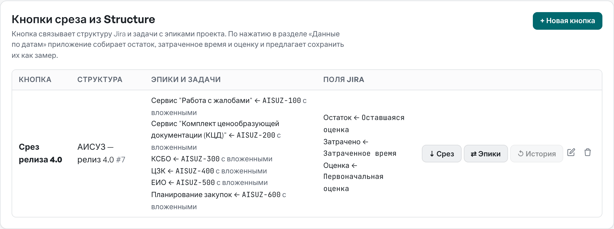
Кнопки среза появляются в разделе «Данные по датам» рядом с Замер по всем эпикам (видны руководителю проекта и администратору, когда подключение к Jira настроено).
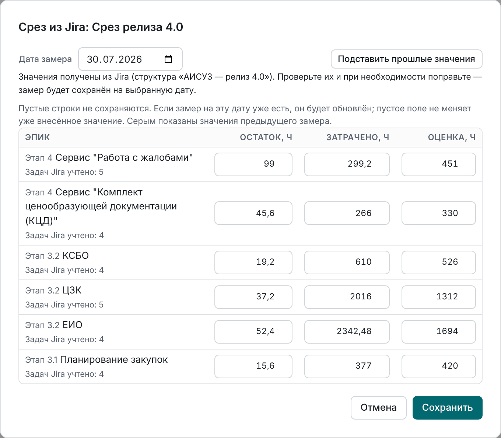
| Предупреждение | Что означает |
|---|---|
| «ABC-1: задача не найдена или нет прав на просмотр» | Ключ указан с ошибкой или учётной записи Jira не хватает прав |
| «ABC-5: задачи нет в структуре — учтена только она сама» | Задача не входит в выбранную структуру, поддерево не собрано |
| «N задач(и) структуры недоступны для просмотра — не учтены» | Часть задач поддерева скрыта от учётной записи Jira |
| «Поле … не числовое — метрика не заполнена» | В сопоставлении полей выбрано нечисловое поле |
Важно. Первый успешный срез по кнопке открывает для неё автозаполнение по расписанию — появится сообщение «Первый срез получен — для кнопки доступно автозаполнение по расписанию». Срез считается успешным, если Jira вернула значения хотя бы по одному эпику.
Если проект подключён к Jira недавно, графики начинаются с первого среза. Восстановление истории заполняет прошлые даты по журналу изменений Jira: Burndown смотрит, какими были остаток, затраченное время, оценка и статусы задач в конце каждого дня периода.
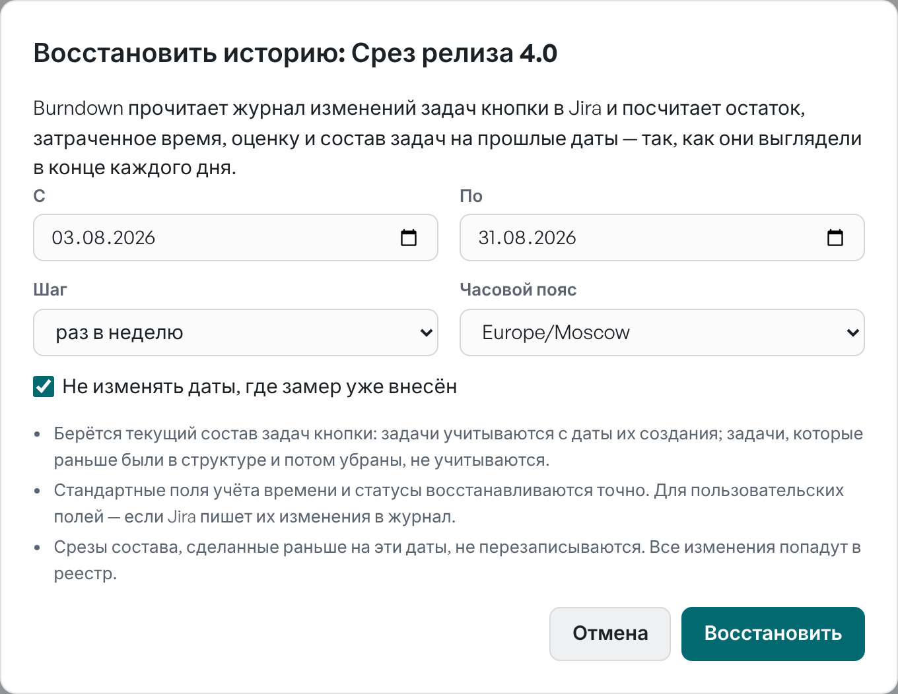
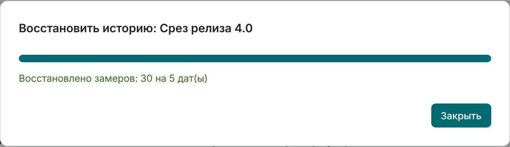
Что важно знать:
Чтобы прогноз был виден там, где работает команда, Burndown может записывать его в задачи Jira — в те, что соответствуют эпикам проекта. Задача эпика — первая задача в его привязке к кнопке среза (обычно сама задача-эпик). Запись разрешает администратор в «Интеграциях»; пока разрешения нет, блок показывает «Запись в Jira не разрешена администратором».
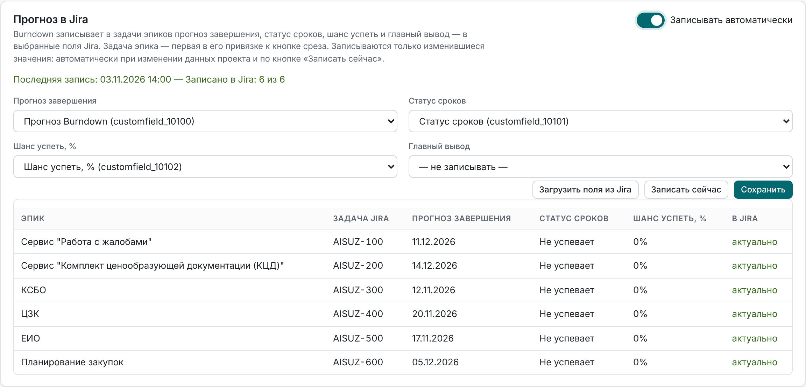
Что можно записывать — в пользовательские поля Jira подходящего типа:
| Показатель | Значение | Подходящие поля Jira |
|---|---|---|
| Прогноз завершения | Дата прогноза «0»; если остаток не сгорает или срок больше 3 лет — поле очищается (в текстовое поле пишется «не сгорает» или «> 3 лет») | Дата, дата и время, текст |
| Статус сроков | «Успевает», «Риск», «Не успевает», «Нет цели», «Нет прогноза», «Завершён» | Текст или список (в списке должны быть эти значения) |
| Шанс успеть, % | Шанс успеть к цели по методу Монте-Карло, число от 0 до 100 | Число, текст |
| Главный вывод | Первая фраза из выводов по эпику | Текст |
Настройка:
Записываются только изменившиеся значения: если прогноз и статус те же, Jira не получает лишних правок и уведомлений. Результат последней записи — над полями; ошибки показаны по задачам, например «AISUZ-100: Field ‘customfield_10101’ cannot be set. It is not on the appropriate screen» — поле нужно добавить на экран редактирования задачи в Jira. Каждая запись видна в реестре изменений.
Важно. Учётной записи подключения к Jira нужно право редактировать эти задачи. Записывайте прогноз только в поля, созданные для Burndown: значение в них перезаписывается при каждом изменении.
Отчёт — страница Confluence с главным по проекту: статус и ключевые цифры, главные риски, что изменилось за неделю, таблицы этапов и эпиков со статусами (цветными метками), остатком, прогнозом, целью, шансом успеть и главным выводом, а также замечания к данным. Подключение к Confluence настраивает администратор в «Интеграциях».
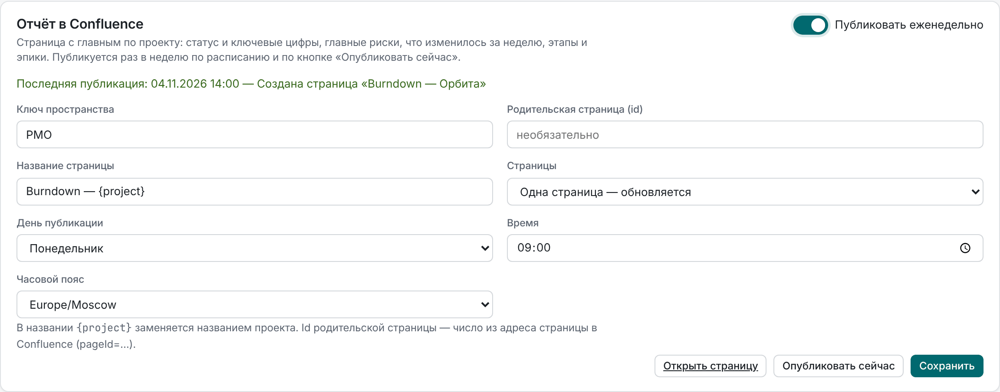
PMO) и, если нужно, Родительскую страницу — её id из адреса страницы (pageId=…).{project} заменяется названием проекта; по умолчанию «Burndown — {project}».Страница целиком формируется Burndown: правки, сделанные на ней вручную, заменятся при следующей публикации. Комментарии и обсуждение на странице сохраняются. Если страницу удалили в Confluence, при следующей публикации она создастся заново.
В разделе «Автозаполнение» для каждой кнопки среза настраивается расписание: в заданные дни и время сервер сам забирает срез и сохраняет замер на текущую дату — открывать Burndown не нужно.
Пока по кнопке не было успешного среза, её карточка заблокирована с подсказкой «Расписание станет доступно после первого успешного среза по этой кнопке». Это гарантирует, что подключение, задачи и поля проверены вручную до того, как сервер начнёт сохранять данные сам.
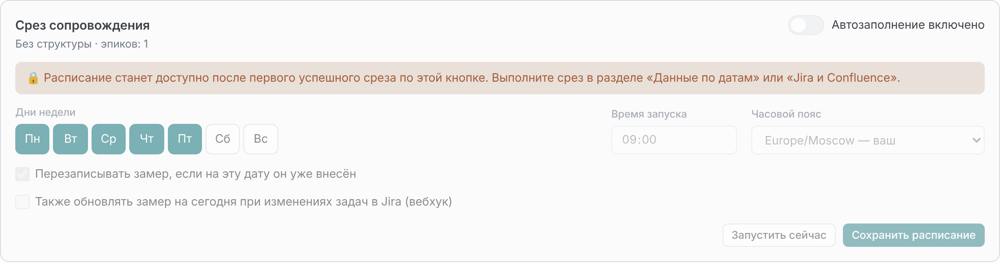
Настройка расписания:
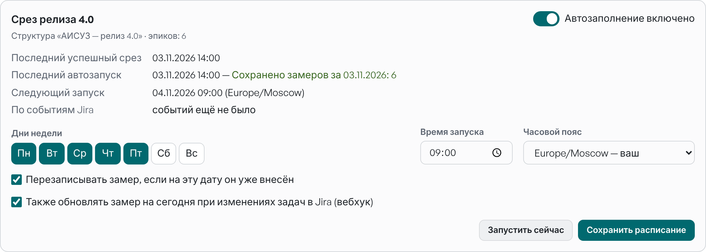
Карточка показывает:
Запустить сейчас выполняет то же, что автоматический запуск: забирает срез и сохраняет замер на сегодня, без окна проверки. Удобно, чтобы проверить расписание или обновить данные перед совещанием.
Как работает автозапуск:
Совет. Выберите время, когда команда уже списала трудозатраты за предыдущий день, — например, 09:00. Тогда дашборд каждое утро показывает свежую картину без ручного ввода.
Если администратор включил вебхук Jira, замер на сегодня может обновляться сам вскоре после изменений задач — не дожидаясь расписания. Отметьте у кнопки Также обновлять замер на сегодня при изменениях задач в Jira (вебхук) и сохраните. Отметка работает и без расписания по дням.
Как это работает:
Каждый срез из Jira — ручной или автоматический — сохраняет не только суммы для замера, но и состав эпиков по задачам на день среза: ключ, тему, статус и значения каждой задачи. По этим срезам дашборд показывает, из чего складываются цифры замера. Блоки видят все участники проекта, в том числе в режиме просмотра; появляются они после первого среза.
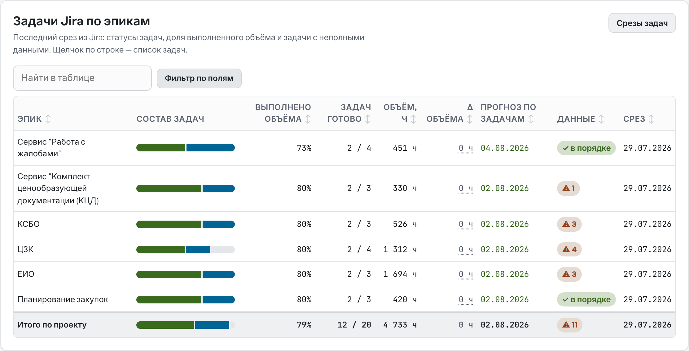
| Столбец | Что показывает |
|---|---|
| Состав задач | Полоса из трёх частей по числу задач: зелёная — готово, синяя — в работе, серая — не начато. Наведите курсор, чтобы увидеть числа |
| Выполнено объёма | Доля объёма закрытых задач в объёме эпика |
| Задач готово | Сколько задач закрыто из всех задач эпика |
| Объём, ч | Сумма объёма задач эпика |
| Δ объёма | Изменение объёма эпика с прошлого среза; щелчок открывает разбор «Что изменилось» |
| Данные | ✓ — данные в порядке; ⚠ N — у N задач неполные данные (подробности — в подсказке и в списке задач) |
| Срез | Дата последнего среза |
Объём задачи — её оценка, а если оценки нет — затрачено плюс остаток. Статус берётся из категории статуса Jira («К выполнению», «В работе», «Готово»), поэтому собственные статусы вашей Jira распределяются по трём группам автоматически. Задачи-контейнеры (эпик Jira или задача, под которой в структуре есть другие задачи) в число задач не входят, но их собственные значения учитываются в объёме — так же, как в замере.
Блок учитывает быстрые фильтры дашборда: скрытые эпики в нём не показываются. В PDF-отчёт дашборда попадает таблица с теми же данными.
Под графиками выбранного эпика — burn-up по срезам задач:
Burn-up отвечает на вопрос, который не видно по остатку: остаток уменьшился, потому что работа сделана, или потому что задачи переоценили. Если линия «Объём» растёт быстрее «Выполнено», срок под угрозой даже при снижающемся остатке. На один день приходится одна точка: повторный срез за день заменяет предыдущий.
Прогноз по задачам. По наклонам линий (темп выполнения и темп роста объёма, ч в день) Burndown считает, когда «Выполнено» догонит «Объём», и рисует пунктир до этой точки. Над графиком — дата и оба темпа; та же дата — в столбце Прогноз по задачам таблицы «Задачи Jira по эпикам» (зелёным — не позже цели, красным — позже). Если объём растёт не медленнее, чем выполняется, прогноз «не сходится»: при таком темпе работа не завершится. При скользящем методе burn rate темпы считаются по срезам окна.
Прогноз по задачам дополняет прогноз по остатку: он опирается на оценки задач и статусы в Jira, а не на внесённый остаток, и сразу учитывает рост объёма. Сильное расхождение двух прогнозов — повод проверить оценки задач и списание остатка.
Щелчок по строке в «Задачах Jira по эпикам» или кнопка Задачи эпика над burn-up открывает список задач эпика из последнего среза. Ключ задачи — ссылка, открывающая задачу в Jira.
Кнопки над таблицей фильтруют список: Все, С проблемами и по статусам; Фильтр по полям добавляет условия по столбцам — например, «Остаток, ч» >0 и статус «In Progress» (см. «Поиск и фильтр в таблицах»). Остаток, затрачено и оценка задач — в часах: из выбранного поля Jira, а для показателей из колонок Structure без поля Jira — из той же колонки по самой задаче. В столбце Данные отмечены задачи, из-за которых суммы эпика могут вводить в заблуждение:
| Признак | Что не так | Как влияет на замер |
|---|---|---|
| Не закрыта, нет оценки и остатка | Задача в работе или не начата, но не оценена | Остаток эпика занижен |
| Закрыта, но остаток не обнулён | Задача в «Готово», а остаток остался | Остаток эпика завышен |
| В работе, остаток 0 при ненулевой оценке | Остаток обнулили раньше закрытия | Остаток занижен, работа ещё идёт |
| Затрачено больше оценки | Перерасход по задаче | Сигнал недооценки похожих задач |
Проверки учитывают сопоставление полей кнопки: если показатель не берётся из Jira («не заполнять»), связанные с ним признаки не выставляются.
Совет. Перед совещанием откройте задачи с отметкой ⚠ и попросите исполнителей поправить оценки в Jira. После следующего среза цифры замера станут точнее, а отметки исчезнут.
Если у эпика есть предыдущий срез, под значениями остатка, затраченного и оценки показано их изменение, а задачи, которых в прошлом срезе не было, отмечены «новая».
Щелчок по значению в столбце Δ объёма или кнопка Что изменилось над burn-up открывает разбор изменения объёма эпика между двумя срезами (по умолчанию — предпоследним и последним; даты меняются в полях С и по).
Каскадная диаграмма раскладывает изменение объёма на части:
| Часть | Что входит |
|---|---|
| Новые | Задачи, которых не было в эпике на первую дату |
| Убраны | Задачи, которые были на первую дату, но их нет на вторую (удалены, перенесены, убраны из структуры) |
| Переоценка | Изменение объёма задач, которые были на обе даты |
Объём на первую дату + новые − убранные ± переоценка = объём на вторую дату. Ниже диаграммы — списки задач по каждой части, а также задачи, закрытые и переоткрытые за период. Ключи задач открывают их в Jira.
Пользователи с ролью «Пользователь» работают в режиме просмотра: над разделом показывается предупреждение, поля ввода недоступны, кнопки добавления, удаления, перетаскивания и среза из Jira скрыты, разделы «Настройки проекта», «Jira и Confluence» и «Автозаполнение» в меню не отображаются.
Остаются доступны фильтры, выбор эпика на графике, сортировка таблиц, период burn rate, выгрузка в PDF и печать, а также раздел «Уведомления» — подписка на дайджест и оповещения. Если у вас разные роли в разных проектах, режим переключается при смене проекта.
В разделах «Дашборд», «Свод по этапам» и «Данные по датам» кнопка PDF формирует на сервере отчёт с таблицами раздела:
Объём работ в отчётах дашборда и свода — в единицах из «Настроек проекта» (часы или человеко-дни), в «Данных по датам» — в часах, как вводятся замеры.
Кнопка Печать (дашборд и свод) печатает раздел вместе с графиками: меню и кнопки скрываются, страница подстраивается под альбомный A4. Чтобы получить PDF с графиками, выберите в диалоге печати «Сохранить как PDF».
Burndown может сам присылать сводку по проекту и сообщать, когда сроки или данные ухудшились, — на почту и в Telegram. Подписка у каждого своя и настраивается в разделе «Уведомления» отдельно для каждого проекта. Подписаться может любой участник проекта, в том числе с ролью «Пользователь».
Важно. Почту и Telegram-бота подключает администратор. Пока он этого не сделал, при сохранении появится сообщение «Администратор ещё не настроил отправку почты» или «Администратор ещё не подключил Telegram-бота».
В блоке «Куда присылать» отметьте один или оба канала:
Привязка Telegram — один раз для всех проектов:
Ссылка действует, пока вы не запросите новую. Отвязать отключает Telegram во всех ваших подписках; привязать его снова можно в любой момент.
Дайджест — сводка по проекту на текущий день. Он начинается с главного из блока «Выводы»: одна фраза о сроках проекта, до пяти главных рисков, до шести изменений «За неделю» и замечания к данным. Ниже — сколько эпиков успевают, в риске и не успевают, общий остаток и таблица эпиков со статусом, остатком, прогнозом «0», целевой датой и шансом успеть. Цифры совпадают с дашбордом: сервер считает их по тем же правилам и настройкам прогноза проекта. Сданные эпики в дайджест не попадают.
Под названием эпика дайджест показывает, что изменилось с прошлого дайджеста: смену статуса, изменение шанса успеть в процентных пунктах и остатка в часах. Если автозаполнение завершилось ошибкой, её текст будет в отдельном блоке.
Настройка:
Под настройками видны Последний дайджест — когда он отправлен и с каким результатом по каждому каналу — и Следующий — дата и время ближайшей отправки.
Предпросмотр показывает письмо, каким оно будет, если отправить его сейчас. Отправить сейчас присылает дайджест по выбранным каналам немедленно — удобно, чтобы проверить доставку. Такая отправка не меняет точку отсчёта «что изменилось»: её задаёт только дайджест по расписанию.
Как работает отправка:
Оповещение приходит сразу, когда в проекте что-то ухудшилось. Сервер проверяет проект после каждого изменения данных: замера, правки эпика или настроек, среза из Jira — ручного или автоматического. Включите переключатель Оповещения включены и отметьте нужные виды:
| Вид | Когда приходит |
|---|---|
| Статус ухудшился | Статус эпика или этапа сменился на худший: «Успеваем» → «Риск» → «Не успеваем» |
| Шанс успеть ниже порога | Шанс успеть к цели был не ниже порога и опустился ниже; порог — от 1 до 99% |
| Рост объёма | Объём задач Jira эпика вырос за срез больше чем на заданный процент (от 1 до 1000%) |
| Неполные данные | Стало больше задач Jira с проблемами: без оценки, закрытых с остатком и т. п. |
| Автозаполнение не выполнено | Автозапуск по кнопке среза завершился ошибкой Jira |
Если изменений несколько, они приходят одним сообщением списком. Отслеживаются только ухудшения: когда эпик возвращается в «Успеваем», сообщения нет. Сравнение ведётся с предыдущей проверкой, поэтому сразу после включения оповещений сообщений не будет — первое придёт при следующем ухудшении.
Совет. Руководителю проекта удобно включить все виды оповещений и дайджест раз в неделю перед планёркой. Участнику, который только смотрит отчёты, обычно достаточно дайджеста.
Привязанный Telegram — это не только рассылки: бота можно спросить о сроках в любой момент. Он отвечает по проектам, к которым у вас есть доступ.
| Команда | Ответ |
|---|---|
| /status (/статус) | Статус проекта на сегодня: главное одной фразой, ключевые цифры, сколько эпиков успевают, в риске и не успевают; ссылка «Открыть в Burndown» |
| /risks (/риски) | Главные риски проекта и замечания к данным |
| /week (/неделя) | Что изменилось в выводах за неделю |
| /projects (/проекты) | Ваши проекты с номерами и главным по каждому |
| /help (/помощь) | Список команд |
Если у вас один проект, команды отвечают сразу по нему. Если проектов несколько, укажите проект после команды — номером из /projects или частью названия: /risks 2, /status аисуз. Без проекта /status показывает список всех проектов, а /risks и /week — по три главных пункта по каждому.
Привязка Telegram тоже проходит через бота: после Запустить (Start) по ссылке бот сам подтвердит привязку, а Проверить в Burndown покажет «✓ Привязан». Команды отключает администратор; тогда бот присылает только дайджесты и оповещения.
На телефоне боковое меню скрыто и открывается кнопкой ☰; после выбора раздела оно закрывается само. Широкие таблицы прокручиваются по горизонтали, а таблица замеров и окно замера по всем эпикам показывают данные карточками: дата, остаток, затраченное время и оценка с подписями. Подсказку к шансу успеть показывает касание процента.
Кто: руководитель проекта. Цель: обновить данные по всем эпикам и оценить сроки.
Результат: актуальная картина сроков за несколько минут.
Кто: руководитель проекта, задачи команды ведутся в Jira со структурой Structure.
Результат: замер за сегодня по всем эпикам заполнен из Jira, для кнопки открыто автозаполнение.
Кто: руководитель проекта после первого успешного среза.
Результат: данные обновляются каждый рабочий день без участия человека.
Кто: руководитель проекта, который хочет сам вносить оценку, а остаток и затраченное брать из Jira.
Результат: часть показателей ведётся вручную, часть — из Jira.
Кто: руководитель проекта, у эпика выросла Δ оценки.
Результат: на совещании понятно, откуда взялся рост, и данные в Jira приведены в порядок.
Кто: руководитель проекта, Jira ведётся давно, Burndown подключают сейчас; проект в Burndown пустой.
Результат: проект с первого дня в Burndown получает полноценную историю и прогноз, а дальше — новые эпики, цели, «Сдано» и замеры приходят из Jira сами.
Кто: руководитель нескольких направлений, смотрит проект целиком.
Результат: понятно, где проблема в темпе, а где в росте объёма, — и с кем говорить.
Кто: руководитель проекта перед длинными праздниками.
Результат: прогноз не обещает работу в праздники, а цифры понятны заказчику, который считает в человеко-днях.
Кто: руководитель проекта; заказчик смотрит проект с ролью «Пользователь».
Результат: заказчик каждую неделю получает актуальную сводку, а руководитель узнаёт о проблемах в день их появления.
Кто: руководитель проекта; руководство смотрит Jira и Confluence, а не Burndown.
Результат: прогноз и статус видны в фильтрах и досках Jira, а по понедельникам руководство получает обновлённую страницу проекта в Confluence.
Кто: руководитель проекта перед незапланированным звонком.
/status 1 — получает главное и ключевые цифры./risks 1 — список главных рисков, а /week 1 — что поменялось за неделю.Результат: актуальные цифры и причины — без компьютера и без открытия отчётов.
Не вижу нужный проект. Доступ к проектам открывает администратор. Если проектов нет совсем, вместо разделов отображается сообщение «Нет доступных проектов».
Поля серые, кнопок нет. У вас роль «Пользователь» в этом проекте — режим просмотра. Для редактирования обратитесь к администратору.
Статус «Нет цели». Укажите целевую дату эпика («Эпики» или поле Цель на дашборде) либо этапа (Цель этапа в своде).
Прогноз «не сгорает». Остаток по замерам не уменьшается. Проверьте значения; если всё верно — работы не продвигаются.
Выводы не совпадают с выбранными на дашборде эпиками. «Выводы» всегда считаются по всем несданным эпикам проекта: это картина проекта целиком. Флажки Эпики на дашборде меняют только графики и таблицы. Выводы по одному эпику — под его графиком («Почему такой прогноз»).
«Замер устарел», хотя данные свежие. Вывод появляется, когда последний замер эпика старше порога из «Настроек проекта» (по умолчанию 10 дней). Включите автозаполнение или увеличьте порог, если замеры делаются реже.
Как учесть праздники? В «Настройках проекта» отметьте Считать сроки в рабочих днях: праздники РФ уже есть в общем производственном календаре, свои даты проекта добавьте в поля ниже — см. «Сценарий 8а».
Эпик появился сам. Включена синхронизация эпиков с Jira: в структуре или запросе появилась новая задача-эпик, и Burndown добавил её перед автозаполнением. Настройки — кнопка ⇄ Эпики в «Связи с Jira».
Эпик стал «Сдано» сам. Задачу эпика закрыли в Jira, а синхронизация отмечает «Сдано» по статусу. Если задачу переоткроют, отметка снимется при следующей синхронизации.
Не вижу «Портфель проектов». Пункт появляется, когда у вас доступ к двум и более проектам.
Пропал блок дашборда. Он мог быть скрыт в ⚙ Вид: откройте окно и отметьте блок снова.
«Замер на эту дату уже есть». Измените значения в существующей строке или используйте Замер по всем эпикам — окно обновит существующий замер.
Нет кнопки среза в «Данных по датам». Кнопки видны руководителю проекта и администратору, когда администратор настроил подключение к Jira и в проекте создана хотя бы одна кнопка.
«Jira отклонила логин или пароль подключения (401)». Скорее всего, сменился пароль учётной записи, от имени которой Burndown читает Jira. Сообщите администратору: он введёт новый пароль в «Интеграциях».
«Jira требует ввести CAPTCHA для учётной записи подключения». После нескольких неудачных входов Jira Server/Data Center просит пройти проверку. Сообщите администратору: он войдёт в Jira в браузере под этой учётной записью, пройдёт проверку, и срезы снова заработают.
«Структура N не найдена или плагин Structure недоступен». Проверьте номер структуры и права учётной записи Jira на неё. Если плагина Structure нет, используйте кнопку без структуры — подзадачи соберутся по связи «задача — подзадача».
В окне среза пустые значения у эпика. У задач не заполнены выбранные поля Jira, или все задачи недоступны — смотрите предупреждения под названием эпика.
Переключатель автозаполнения неактивен. По кнопке ещё не было успешного среза. Выполните срез в «Данных по датам» — переключатель станет доступен.
Автозапуск не сработал утром. Посмотрите Последний автозапуск в карточке: при ошибке там её текст. Если расписание включено после сегодняшнего времени запуска, первый запуск будет на следующий день. При длительной недоступности сервера обратитесь к администратору.
Нет блока «Задачи Jira по эпикам». Он появляется после первого среза из Jira (ручного или автоматического) и показывает только эпики, выбранные в быстрых фильтрах.
В столбце «Шанс успеть» прочерк. У эпика меньше трёх замеров остатка или не задана целевая дата.
Шанс 0%, хотя статус не «Не успеваем». В истории замеров остаток чаще рос, чем сгорал, поэтому в большинстве сценариев он не обнуляется. Проверьте замеры и Δ оценки.
Дрейфа прогноза нет на дашборде. Нужно хотя бы два замера остатка у выбранного эпика.
«Прогноз по задачам» — «не сходится». За период срезов объём задач эпика рос не медленнее, чем закрывались задачи. Посмотрите «Что изменилось» — какие задачи добавлялись.
Прогноз по задачам и прогноз «0» сильно различаются. Первый считается по оценкам и статусам задач Jira, второй — по внесённому остатку. Расхождение обычно значит, что остаток в Jira не списывается вместе с работой или оценки задач устарели.
История восстановилась с нулём замеров. На выбранные даты задач кнопки ещё не было (созданы позже) или замеры на эти даты уже внесены и отмечено «Не изменять даты, где замер уже внесён».
Число задач меньше, чем в Jira. В число задач не входят задачи-контейнеры (эпик Jira, задачи с вложенными), а также задачи, недоступные учётной записи Jira, — о них предупреждает окно среза.
Не приходит дайджест. Посмотрите Последний дайджест в «Уведомлениях»: при ошибке там её текст. Проверьте дни, время и часовой пояс, а также папку «Спам». Отправить сейчас проверяет доставку сразу. Если ошибка в настройках почты или бота, обратитесь к администратору.
Бот не находит привязку. Нажмите Запустить (Start) именно в чате, открытом по ссылке из окна, и только потом Проверить. Если вы запросили новую ссылку, старая больше не действует.
Бот отвечает «Этот чат не привязан к Burndown». Привяжите Telegram в «Уведомлениях» любого своего проекта. Чат привязан к одной учётной записи: если в том же чате привязали другую, отвечать бот будет ей.
В «Что изменилось за неделю» пусто. За неделю статусы, прогнозы и шансы изменились меньше порогов — это хороший признак. Если замеров меньше недели, сравнивать пока не с чем.
Прогноз не записался в Jira. Посмотрите строку над полями «Прогноз в Jira»: ошибка показана по каждой задаче. Чаще всего поле не добавлено на экран редактирования задачи или у учётной записи подключения нет права редактировать задачу — обратитесь к администратору Jira.
Замер не обновился после изменения задачи в Jira. Срез по событию выполняется через 2 минуты, а повторно — не раньше чем через 10 минут после прошлого. Проверьте строку «По событиям Jira» в карточке автозаполнения; если её нет — отметка у кнопки не включена, если событий не было — вебхук не настроен в Jira (обратитесь к администратору).
Оповещение не пришло, хотя эпик в «Не успеваем». Оповещение приходит в момент ухудшения. Если эпик уже был в этом статусе, когда вы включили оповещения, сообщения не будет — его состояние видно в дайджесте.
«Слишком много неудачных попыток входа». После 10 неверных паролей подряд вход под этим логином закрыт на 15 минут. Подождите или попросите администратора задать новый пароль.
После смены пароля пришлось войти заново на другом устройстве. Так и задумано: смена пароля завершает все другие сессии учётной записи.
«Нет связи с сервером — изменения не сохранены». Проверьте сеть и повторите ввод: прежнее значение в поле уже восстановлено.
После обновления интерфейс выглядит странно. Обновите страницу с очисткой кэша: Ctrl+F5 (на macOS — Cmd+Shift+R).
| Термин | Определение |
|---|---|
| Burn rate | Скорость сгорания остатка, часов (или человеко-дней) в день — календарный или рабочий |
| Выводы | Короткие фразы о сроках и их причинах на уровне эпика, этапа, проекта и портфеля |
| Нужный темп | Сколько нужно сгорать в день, чтобы остаток обнулился к цели |
| Портфель проектов | Сводка выводов по всем доступным проектам |
| Рабочие дни | Режим расчёта сроков без выходных и праздников проекта |
| Уровень доверия | Доля сценариев Монте-Карло между границами диапазона прогноза: 50, 70, 80 или 90% |
| Человеко-день | Единица объёма: заданное в настройках число часов (по умолчанию 8) |
| Δ оценки | Изменение оценки от первого до последнего замера |
| PAT | Personal Access Token — персональный токен доступа Jira Server/DC |
| API-токен | Токен доступа Jira Cloud, создаётся на id.atlassian.com |
| Structure | Плагин Jira (Tempo) для иерархических структур задач |
| Поддерево | Задача и все задачи, вложенные в неё в структуре |
| Срез | Значения остатка, затраченного времени и оценки, собранные из Jira на момент запроса |
| Автозаполнение | Автоматический срез и сохранение замера по расписанию |
| Burn-up | График объёма задач и выполненного объёма по датам срезов |
| Объём задачи | Оценка задачи, а если её нет — затрачено плюс остаток |
| Задача-контейнер | Задача, под которой в структуре или по связи «подзадача» есть другие задачи |
| Монте-Карло | Метод прогноза: многократное моделирование будущего по реальным интервалам между замерами |
| P15, P50, P85 | Даты, к которым завершается 15%, 50% и 85% смоделированных сценариев |
| Журнал изменений | История изменений задачи в Jira — по ней восстанавливаются прошлые значения |
| Дрейф прогноза | Изменение прогнозной даты завершения от замера к замеру |
| Прогноз по задачам | Дата, когда «Выполнено» догонит «Объём» на burn-up при текущих темпах |
| Целевая линия | Требуемая траектория остатка к нулю на целевую дату |
| Буфер риска | Допустимое опоздание прогноза, при котором статус — «Риск» |
| Дайджест | Сводка по проекту, которую Burndown присылает по расписанию на почту или в Telegram |
| Оповещение | Сообщение об ухудшении сроков или данных проекта сразу после изменения |
| Лента изменений | Что поменялось в выводах проекта по неделям: статусы, прогнозы, шанс успеть, новые и сданные эпики |
| Снимок выводов | Сохранённые на дату статусы, прогнозы и шансы эпиков и этапов — основа ленты изменений |
| Вебхук | Сообщение, которое Jira сама отправляет Burndown при изменении задачи |
| Запись в Jira | Прогноз, статус и шанс успеть, которые Burndown пишет в поля задач эпиков |